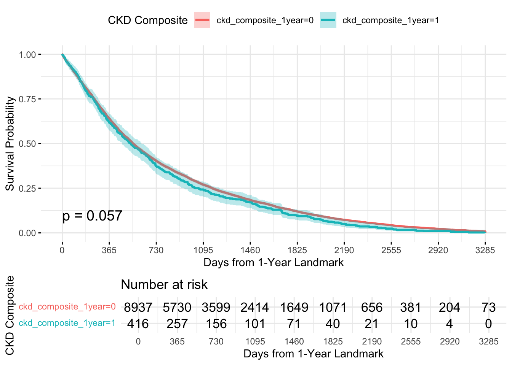

rm(list = ls())
library(readxl)
library(dplyr)
library(tidyverse)
library(tableone)
library(writexl)
library(gtsummary)
library(survival)
library(ggplot2)
library(ggpubr)
library(splines)
library(lattice)
library(mice)
library(DescTools)
library(survminer)
library(finalfit)
library(tidycmprsk)
library(ggsurvfit)
library(car)
library(cobalt)
library(pammtools)
library(adjustedCurves)
library(rms)
library(riskRegression)
library(prodlim)
library(bodycompref)
library(table1)
library(readr)ICI CKD – Long-term Kidney Outcomes Analysis
1 Variable Name Dictionary
Gold standard = master Excel column name (left column). In Code = what this variable is called in the working code. Naming rules:
ICI_Dose_Date→Index_date(future datasets provide this directly)EMPIkept uppercase (required by RPDR functions)- New derived variables: descriptive snake_case
- All other master Excel variable names kept as-is
1.1 Identifiers & Demographics
| Master Excel | In Code | Note |
|---|---|---|
EMPI |
EMPI |
Uppercase for RPDR compatibility |
Age |
Age |
|
Gender_Legal_Sex |
Gender_Legal_Sex |
|
male |
male |
0/1 |
Race |
Race |
|
Ethnic_Group |
Ethnic_Group |
1.2 Key Dates
| Master Excel | In Code | Note |
|---|---|---|
ICI_Dose_Date |
Index_date |
Renamed; future datasets provide Index_date directly |
last_cre_date |
last_cre_date |
Date of last creatinine lab (used as follow-up date) |
| — | last_cre_days |
Derived: numeric days from Index_date to last_cre_date |
1.3 Comorbidities (from master)
| In Code | Description |
|---|---|
dm |
Diabetes mellitus |
htn |
Hypertension |
cad |
Coronary artery disease |
esrd_kt |
ESRD / kidney transplant (pre-ICI) |
1.4 Medications (from master)
| In Code | Description |
|---|---|
ace_arb |
ACE inhibitor / ARB |
diu |
Diuretics |
ppi |
Proton pump inhibitor |
steroids |
Steroids |
smoking |
Smoking status |
1.5 Cancer Drugs (from master)
| In Code | Description |
|---|---|
Bevacizumab |
|
Cisplatin |
|
Carboplatin |
|
Pemetrexed |
|
Gemcitabine |
|
Cetuximab |
|
Trastuzumab |
|
VEGF_TKI |
VEGF tyrosine kinase inhibitor |
1.6 Pre-baseline Lab Values (from master)
| In Code | Description |
|---|---|
pre_CRE_180days |
Creatinine within 180 days pre-ICI |
pre_HGB_180days |
Hemoglobin within 180 days pre-ICI |
pre_ALB_180days |
Albumin within 180 days pre-ICI |
1.7 RPDR-derived Baseline Lab (within 90 days pre-Index_date)
| In Code | RPDR Group_Id | Description |
|---|---|---|
pre_median_CRE_90days |
CRE |
Median creatinine ≤ 90 days before Index_date |
1.8 Baseline eGFR & CKD Stage
| In Code | Description |
|---|---|
eGFR_CRE_baseline |
CKD-EPI 2021 creatinine eGFR from pre_median_CRE_90days |
ckd_stage_baseline |
CKD stage 1–5 from baseline eGFR |
ckd_stage_baseline_3 |
3-level: “stage 1”, “stage 2”, “stage 3 or more” |
ckd_stage |
From eGFR_cre (master column) |
1.9 Outcome Variables (from master + derived)
| In Code | Description |
|---|---|
ckd_incidence |
CKD incidence: >25% eGFR drop AND eGFR <60, from baseline >=60, sustained >=90 days |
ckd_incidence_date |
Date of CKD incidence |
ckd_progression |
CKD progression: >30% eGFR drop from baseline <60, sustained >=90 days |
ckd_progression_date |
Date of CKD progression |
esrd_kt_after_ici |
ESRD/KT after ICI (binary, from master) |
esrd_kt_after_ici_date |
Date of ESRD/KT after ICI |
eskd_defination_1 |
ESKD definition 1 (binary, from master) |
eskd_defination_1_date |
Date of ESKD definition 1 |
eskd_composite |
Derived: esrd_kt_after_ici OR eskd_defination_1 |
eskd_composite_date |
pmin of the two ESKD dates |
ckd_composite |
Derived: eskd_composite OR ckd_incidence OR ckd_progression |
time_to_ckd_composite |
pmin of all three time-to-event values |
1.10 Time-to-Event Variables
| In Code | Description |
|---|---|
time_to_eskd_composite |
Days from Index_date to ESKD composite |
time_to_ckd_incidence |
Days from Index_date to CKD incidence |
time_to_ckd_progression |
Days from Index_date to CKD progression |
time_to_ckd_composite |
pmin of the above three |
time_to_ckd_cmp |
pmin(time_to_ckd_composite, last_cre_days, death_days) |
status_cmp |
Competing risk: 0=censored, 1=CKD composite, 2=death (priority: death > CKD > censored) |
1.11 Survival Flags (1–10 years)
| Pattern | Description |
|---|---|
survival_Xyear |
1 if last_cre_days ≥ 365 × X |
1.12 Yearly Outcome Flags (1–10 years)
| Pattern | Description |
|---|---|
ckd_incidence_Xyear |
1 if time_to_ckd_incidence < 365 × X |
ckd_progression_Xyear |
1 if time_to_ckd_progression < 365 × X |
eskd_composite_Xyear |
1 if time_to_eskd_composite < 365 × X |
1.13 Yearly eGFR & CKD Stage (from RPDR lab, post-Index_date)
| Pattern | Description |
|---|---|
pre_median_CRE_Xyear |
Median CRE in 90-day window around year X post-Index |
eGFR_CRE_Xyear |
CKD-EPI eGFR from that median CRE |
ckd_stage_Xyear |
CKD stage 1–5 from that eGFR |
lab_num_Xyear |
Number of CRE labs in that yearly window |
1.14 Mortality (from master)
| In Code | Description |
|---|---|
death_1year … death_10year |
Binary death flags at each year mark |
2 Setup & Libraries
3 Functions
Each function is defined in its own labeled cell.
3.1 pre_lab_median
Gets the median lab value within a time window before index_date. Returns one row per patient with the median result.
pre_lab_median <- function(data, month, time, index_date, Group_Id) {
index_date <- enquo(index_date)
if (month) {
time_value <- time * 30
} else {
time_value <- time
}
median_name <- paste0("pre_median_", Group_Id, "_", time_value, "days")
result <- data %>%
filter(Group_Id == !!Group_Id, grepl("^\\d+\\.\\d+$", Result)) %>%
filter(!is.na(Result)) %>%
mutate(Result = as.numeric(Result)) %>%
filter(Seq_Date_Time >= (!!index_date) - time_value,
Seq_Date_Time <= !!index_date) %>%
group_by(EMPI) %>%
summarise(
!!median_name := median(Result, na.rm = TRUE),
.groups = "drop"
) %>%
select(EMPI, !!median_name)
return(result)
}3.2 pre_lab_median_year
Gets the median CRE in a 90-day window around each yearly mark post-index. Also finds the closest lab value up to that yearly mark as a fallback. Falls back to the closest value if no labs exist in the 90-day window.
pre_lab_median_year <- function(data, year, days, index_date, Group_Id) {
index_date <- enquo(index_date)
last_offset <- year * 365
first_offset <- last_offset - days
median_name <- paste0("pre_median_", Group_Id, "_", year, "year")
lab_num_name <- paste0("lab_num_", year, "year")
closest_name <- paste0("closest_", Group_Id, "_", year, "year")
closest_date_name <- paste0("closest_", Group_Id, "_", year, "year_date")
median <- data %>%
filter(Group_Id == !!Group_Id, grepl("^\\d+\\.\\d+$", Result)) %>%
filter(!is.na(Result)) %>%
mutate(Result = as.numeric(Result)) %>%
filter(Seq_Date_Time >= (!!index_date + first_offset),
Seq_Date_Time <= !!index_date + last_offset) %>%
group_by(EMPI) %>%
summarise(
!!median_name := median(Result, na.rm = TRUE),
!!lab_num_name := n(),
.groups = "drop"
)
closest <- data %>%
filter(Group_Id == !!Group_Id, grepl("^\\d+\\.\\d+$", Result)) %>%
filter(!is.na(Result)) %>%
mutate(Result = as.numeric(Result)) %>%
filter(Seq_Date_Time <= !!index_date + last_offset) %>%
arrange(EMPI, desc(Seq_Date_Time)) %>%
distinct(EMPI, .keep_all = TRUE) %>%
rename(!!closest_name := Result,
!!closest_date_name := Seq_Date_Time) %>%
select(EMPI, !!index_date, !!closest_name, !!closest_date_name)
result <- median %>%
merge(closest, by = "EMPI", all = TRUE) %>%
mutate(
!!median_name := ifelse(is.na(!!sym(median_name)),
!!sym(closest_name),
!!sym(median_name))
) %>%
select(EMPI, !!median_name, !!lab_num_name)
return(result)
}3.3 left_join_all
Sequentially left-joins a list of data frames onto a master data frame.
left_join_all <- function(master, df_list, by) {
for (df in df_list) {
master <- merge(master, df, by = by, all.x = TRUE)
}
return(master)
}3.4 get_ckd_stage
Classifies CKD stages 1–5 based on eGFR values.
get_ckd_stage <- function(egfr) {
if (is.na(egfr)) {
return(NA)
} else if (egfr >= 90) {
return(1)
} else if (egfr >= 60) {
return(2)
} else if (egfr >= 30) {
return(3)
} else if (egfr >= 15) {
return(4)
} else {
return(5)
}
}3.5 ckd_epi_gfr (CKD-EPI 2021 creatinine-only)
Race-free CKD-EPI 2021 creatinine-based eGFR.
ckd_epi_gfr <- function(creat, male, age) {
k <- ifelse(male == 1, 0.9, 0.7)
a <- ifelse(male == 1, -0.302, -0.241)
m <- ifelse(male == 1, 1, 1.012)
gfr <- 142 * min(c(creat / k, 1))^a * max(c(creat / k, 1))^-1.2 * 0.9938^age * m
return(gfr)
}
gfr_calc <- Vectorize(ckd_epi_gfr)3.6 create_outcome_table
Generates a gtsummary Table 1 for a given year suffix, filtering to patients who survived to that landmark.
create_outcome_table <- function(data, time_suffix) {
year_num <- as.numeric(gsub("[^0-9]", "", time_suffix))
stage_history_cols <- paste0("ckd_stage_", 1:year_num, "year")
survival_col <- paste0("survival_", time_suffix)
ckd_inc_col <- paste0("ckd_incidence_", time_suffix)
ckd_prog_col <- paste0("ckd_progression_", time_suffix)
eskd_comp_col <- paste0("eskd_composite_", time_suffix)
ckd_comp_col <- paste0("ckd_composite_", time_suffix)
data %>%
filter(.data[[survival_col]] == 1) %>%
select(
## Demographics
Age, male, Race, Ethnic_Group,
## Outcomes (dynamic)
all_of(ckd_inc_col), all_of(ckd_prog_col),
all_of(eskd_comp_col), all_of(ckd_comp_col),
## Longitudinal CKD Stages (cumulative up to year X)
all_of(stage_history_cols),
ckd_stage_baseline,
aki,
## Comorbidities
dm, htn, cad, cirrhosis,
## Medications
ace_arb, diu, ppi, steroids, smoking, statins,
ICI_Class, nephrotoxic_chemo,
## Labs / Kidney function
pre_CRE_180days, pre_HGB_180days, pre_ALB_180days,
eGFR_CRE_baseline
) %>%
tbl_summary(missing_text = "Missing")
}3.7 pre_lab (closest value — Cystatin C style)
Finds the closest lab value on or before index_date within the time window. Returns one row per patient (most recent qualifying lab result).
Uses
Seq_Date_Timefor filtering and sorting (bug-fixed version from Cystatin C pipeline).
pre_lab <- function(data, month, time, index_date, Group_Id) {
index_date <- enquo(index_date)
if (month) {
time_value <- time * 30
} else {
time_value <- time
}
lab_name <- paste0("pre_", Group_Id, "_", time_value, "days")
lab_date_name <- paste0("pre_", Group_Id, "_", time_value, "days_date")
result <- data %>%
filter(Group_Id == !!Group_Id, grepl("^\\d+\\.\\d+$", Result)) %>%
filter(!is.na(Result)) %>%
mutate(Result = as.numeric(Result)) %>%
filter(Seq_Date_Time >= (!!index_date) - time_value,
Seq_Date_Time <= !!index_date) %>%
arrange(EMPI, desc(Seq_Date_Time)) %>%
distinct(EMPI, .keep_all = TRUE) %>%
rename(!!lab_name := Result,
!!lab_date_name := Seq_Date_Time) %>%
select(EMPI, !!lab_name, !!lab_date_name)
return(result)
}3.8 dia_list_name (RPDR diagnosis lookup)
Identifies patients with a given diagnosis (and optionally medication) on or before index_date. Supports excluding specific diagnosis name strings.
dia_list_name <- function(data, listed_names, index_date, excluded_names = NULL, med_data = NULL, med_names = NULL) {
if (!is.null(excluded_names)) {
excluded_pattern <- paste(
gsub("([][()])", "\\\\\\1", excluded_names),
collapse = "|"
)
}
if (is.null(excluded_names)) {
dia_result <- data %>%
filter(Date <= {{index_date}}) %>%
filter(grepl(paste(listed_names, collapse = "|"), Diagnosis_Name, ignore.case = TRUE)) %>%
distinct(EMPI)
} else {
dia_result <- data %>%
filter(Date <= {{index_date}}) %>%
filter(
grepl(paste(listed_names, collapse = "|"), Diagnosis_Name, ignore.case = TRUE),
!grepl(excluded_pattern, Diagnosis_Name, ignore.case = TRUE)
) %>%
distinct(EMPI)
}
if (!is.null(med_data)) {
med_result <- med_data %>%
filter(Medication_Date <= {{index_date}}) %>%
filter(grepl(paste(med_names, collapse = "|"), Medication, ignore.case = TRUE)) %>%
distinct(EMPI)
} else {
med_result <- NULL
}
final_result <- rbind(dia_result, med_result) %>%
distinct(EMPI)
return(final_result)
}3.9 cmp_variable (competing risk)
Builds competing-risk time and status for a single outcome. Status coding: 0 = censored, 1 = event occurred, 2 = death (competing event).
cmp_variable <- function(data, event_time, event_status, name) {
event_time <- enquo(event_time)
event_status <- enquo(event_status)
cmp_time_name <- paste0("cmp_time_", name)
cmp_status_name <- paste0("cmp_status_", name)
data %>%
mutate(
!!cmp_time_name := ifelse(time_to_death <= !!event_time, time_to_death, !!event_time),
!!cmp_status_name := ifelse(time_to_death <= !!event_time, time_to_death_status, !!event_status)
)
}3.10 make_ckd_outcome_date (sustained eGFR-based outcomes)
Identifies sustained (≥ days_threshold) episodes where a condition is met. Returns one row per patient with binary flag + first qualifying date.
make_ckd_outcome_date <- function(data, id_var, date_var, condition_expr,
days_threshold = 90, outcome_name = "default") {
id_var <- enquo(id_var)
date_var <- enquo(date_var)
cond_q <- enquo(condition_expr)
outcome_sym <- ensym(outcome_name)
outcome_date_name <- paste0(outcome_name, "_date")
working <- data %>%
arrange(!!id_var, !!date_var) %>%
group_by(!!id_var) %>%
mutate(
.cond = if_else(!!cond_q, 1L, 0L),
.change = .cond != lag(.cond, default = first(.cond)),
.run = cumsum(.change)
)
episodes <- working %>%
group_by(!!id_var, .run) %>%
summarise(
.code = first(.cond),
.start = first(!!date_var),
.last = last(!!date_var),
.groups = "drop"
) %>%
group_by(!!id_var) %>%
mutate(
.end = lead(.start),
.end = if_else(is.na(.end), .last, .end),
.days = as.integer(.end - .start)
) %>%
ungroup()
episodes %>%
filter(!is.na(.days)) %>%
group_by(!!id_var) %>%
summarise(
has_event = any(.code == 1L & .days >= days_threshold, na.rm = TRUE),
event_date = if (any(.code == 1L & .days >= days_threshold, na.rm = TRUE)) {
min(.start[.code == 1L & .days >= days_threshold], na.rm = TRUE)
} else {
as.Date(NA)
},
.groups = "drop"
) %>%
mutate(!!outcome_sym := as.integer(has_event)) %>%
rename(!!outcome_date_name := event_date) %>%
select(-has_event)
}3.12 med_list (RPDR medication lookup)
med_list <- function(names, index_date, excluded_names = NULL, data) {
if (!is.null(excluded_names)) {
result <- data %>%
filter(Medication_Date <= {{index_date}}) %>%
filter(
grepl(paste(names, collapse = "|"), Medication, ignore.case = TRUE),
!grepl(paste(excluded_names, collapse = "|"), Medication, ignore.case = TRUE)
) %>%
distinct(EMPI)
} else {
result <- data %>%
filter(Medication_Date <= {{index_date}}) %>%
filter(grepl(paste(names, collapse = "|"), Medication, ignore.case = TRUE)) %>%
distinct(EMPI)
}
return(result)
}3.13 dia_list_icd (RPDR diagnosis lookup by ICD code)
dia_list_icd <- function(data, index_date, icd_code, excluded_names = NULL,
med_data = NULL, med_names = NULL) {
if (is.null(excluded_names)) {
dia_result <- data %>%
filter(Date <= {{index_date}}) %>%
filter(grepl(paste(icd_code, collapse = "|"), Code, ignore.case = TRUE)) %>%
distinct(EMPI)
} else {
dia_result <- data %>%
filter(Date <= {{index_date}}) %>%
filter(
grepl(paste(icd_code, collapse = "|"), Code, ignore.case = TRUE),
!grepl(paste(excluded_names, collapse = "|"), Diagnosis_Name, ignore.case = TRUE)
) %>%
distinct(EMPI)
}
if (!is.null(med_data)) {
med_result <- med_data %>%
filter(Medication_Date <= {{index_date}}) %>%
filter(grepl(paste(med_names, collapse = "|"), Medication, ignore.case = TRUE)) %>%
distinct(EMPI)
} else {
med_result <- NULL
}
final_result <- rbind(dia_result, med_result) %>% distinct(EMPI)
return(final_result)
}3.14 dia_list_icd_after_index (post-index diagnosis with first event date)
dia_list_icd_after_index <- function(data, index_date, icd_code,
excluded_names = NULL) {
if (is.null(excluded_names)) {
result <- data %>%
filter(Date > {{index_date}}) %>%
filter(grepl(paste(icd_code, collapse = "|"), Code, ignore.case = TRUE))
} else {
result <- data %>%
filter(Date > {{index_date}}) %>%
filter(
grepl(paste(icd_code, collapse = "|"), Code, ignore.case = TRUE),
!grepl(paste(excluded_names, collapse = "|"), Diagnosis_Name, ignore.case = TRUE)
)
}
result %>%
arrange(EMPI, Date) %>%
distinct(EMPI, .keep_all = TRUE) %>%
select(EMPI, first_event_date = Date)
}4 Data Loading
4.1 Load master file
Future datasets will provide
EMPIandIndex_datecolumns directly. Update the path and column rename below accordingly.
# ── Update this path to your master Excel file ──
# Drop pre-computed columns — we derive them from RPDR Dia/Med/Lab
# Drop pre-computed columns — we derive them from RPDR
drop_cols <- c("eGFR_cre", "ckd_stage", "last_date", "last_days",
"dm", "htn", "cad", "ace_arb", "diu", "ppi", "steroids",
"smoking", "esrd_kt", "esrd_kt_after_ici", "esrd_kt_after_ici_date",
"ckd_incidence", "ckd_incidence_date", "ckd_progression", "ckd_progression_date",
"eskd_defination_1", "eskd_defination_1_date",
"ckd_composite", "time_to_ckd_incidence", "time_to_ckd_progression",
"time_to_ckd_composite",
paste0("ckd_incidence_", 1:10, "year"),
paste0("ckd_progression_", 1:10, "year"),
paste0("ckd_composite_", 1:10, "year"),
paste0("death_", 1:10, "year"))
final_master <- read_excel(
"/Users/to909/Desktop/Meg/Kavita ICI CKD/final_master_1217.xlsx"
) %>%
select(-any_of(drop_cols))
# ── Rename ICI_Dose_Date → Index_date for future compatibility ──
# If your dataset already has Index_date, remove this rename.
final_master <- final_master %>%
rename(Index_date = ICI_Dose_Date)4.2 Load RPDR files (Lab, Dia, Med)
rpdr_path <- "/Users/to909/Partners HealthCare Dropbox/Tianqi Ouyang/CKD after ICI/RPDR/"
# Lab
lab <- read.table(
paste0(rpdr_path, "mes98_093025104659807332_Lab.txt"),
sep = "|", fill = TRUE, quote = "", header = TRUE
) %>%
select(EMPI, EPIC_PMRN, Seq_Date_Time, Result, Group_Id, Test_Description)
lab$Seq_Date_Time <- as.Date(lab$Seq_Date_Time, "%m/%d/%Y")
# Diagnoses
dia <- read.table(
paste0(rpdr_path, "mes98_093025104659807332_Dia.txt"),
sep = "|", fill = TRUE, quote = "", header = TRUE
) %>%
select(EMPI, EPIC_PMRN, Code, Date, Diagnosis_Name)
dia$Date <- as.Date(dia$Date, "%m/%d/%Y")
# Medications
med <- read.table(
paste0(rpdr_path, "mes98_093025104659807332_Med.txt"),
sep = "|", fill = TRUE, quote = "", header = TRUE
) %>%
select(EMPI, Medication_Date, Medication)
med$Medication_Date <- as.Date(med$Medication_Date, "%m/%d/%Y")4.3 Coerce dates & create master_lab / master_dia / master_med
final_master$Index_date <- as.Date(final_master$Index_date)
final_master$last_cre_date <- as.Date(final_master$last_cre_date)
master_list <- final_master %>% select(EMPI, Index_date)
master_lab <- lab %>% merge(master_list, by = "EMPI")
master_dia <- dia %>% merge(master_list, by = "EMPI")
master_med <- med %>% merge(master_list, by = "EMPI")5 Comorbidities & Medications (from RPDR Dia + Med)
5.1 Medication name lists
ppi_names <- c("omeprazole", "Prilosec", "Yosprala", "lansoprazole", "Prevacid",
"dexlansoprazole", "Dexilent", "rabeprazole", "Aciphex",
"pantoprazole", "Protonix", "esomeprazole", "Nexium", "Vimovo",
"Zegerid", "dexilant")
ace_arb_names <- c("benazepril", "lotensin", "captopril", "capoten", "enalapril",
"vasotech", "epaned", "lexxel", "fosinopril", "monopril",
"lisinopril", "prinvil", "zestril", "qbrelis", "moexipril",
"univasc", "perindopril", "aceon", "quinapril", "accupril",
"ramipril", "altace", "trandolapril", "mavik", "azilsartan",
"edarbi", "candesartan", "atacand", "eprosartan", "teveten",
"irbesartan", "avapro", "telmisartan", "micardis", "valsartan",
"diovan", "losartan", "cozaar", "olmesartan", "benicar",
"lotrel", "hyzaar")
diuretics_names <- c("bumetanide", "bumex", "ethacrynic acid", "edecrin",
"furosemide", "Lasix", "torsemide", "demadex",
"hydrochlorothiazide", "hctz", "chlorathiazide",
"chlorthalidone", "diuril", "indapamide", "metolazone",
"aldactone", "amiloride", "dyazide", "eplerenone",
"maxzide", "spironolactone", "triamterene")
steroids_names <- c("prednisone", "methylpred", "Deltasone", "Orasone",
"budesonide", "Entocort", "methylprednisolone",
"prednisolone", "Millipred", "dexamethasone", "Ozurdex",
"Maxidex", "DexPak")
no_steroid_names <- c("Inhaler", "Nebulization", "Ointment", "Ophthalmic",
"Symbicort")
statins_names <- c("Atorvastatin", "Lipitor", "Fluvastatin", "Lescol",
"Lovastatin", "Mevacor", "Pitavastatin", "Livalo",
"Pravastatin", "Pravachol", "Rosuvastatin", "Crestor",
"Simvastatin", "Zocor")
dpp4i_names <- c("Alogliptin", "Vipidia", "Nesina",
"Linagliptin", "Tradjenta",
"Saxagliptin", "Onglyza",
"Sitagliptin", "Januvia",
"Vildagliptin", "Galvus")
sglt2i_names <- c("Canagliflozin", "Dapagliflozin", "Empagliflozin", "Ertugliflozin",
"Invokana", "Farxiga", "Forxiga", "Jardiance", "Steglatro")5.2 Diagnosis code lists
esrd_kt_codes <- c(
"585.6", "N18.6", "V45.1", "Z94.0", "Z99.2",
"996.81", "T86.1", "T86.10", "T86.11", "T86.12", "T86.13", "T86.19",
"N18.0", "V56.1", "Z49.0", "Z49.1", "Z49.2"
)
diabetes_codes <- c(
"250.00", "250.01", "250.02", "250.03", "250.10", "250.11", "250.12",
"250.13", "250.40", "250.41", "250.42", "250.43",
"E10.9", "E11.9", "E10.65", "E11.65", "E10.21", "E11.21",
"E10.22", "E11.22", "E10.29", "E11.29", "E10.40", "E11.40",
"E10.49", "E11.49", "E13.9"
)
htn_codes <- c("401.1", "401.0", "401.9", "I10", "I15.1", "I15.9",
"I15.8", "I15.0", "I15.2", "405.01", "405.09", "405.91",
"405.99")
no_htn_list <- c("Pulmonary Embolism", "Borderline hypertension",
"Labile hypertension", "Chronic venous hypertension")
htn_med_list <- c("chlorthalidone", "chlorothiazide", "hydrochlorothiazide",
"indapamide", "metolazone", "spironolactone", "triamterene",
"amlodipine", "diltiazem", "felodipine", "nifedipine",
"verapamil", "benazepril", "captopril", "enalapril",
"fosinopril", "lisinopril", "ramipril", "losartan",
"valsartan", "irbesartan", "olmesartan", "candesartan",
"clonidine", "hydralazine", "minoxidil")
cad_list <- c("Coronary artery disease", "Coronary atherosclerosis",
"Atherosclerotic heart disease", "Angina pectoris",
"Chronic ischemic heart disease", "Unstable angina",
"Ischemic heart disease", "Ischemic cardiomyopathy",
"Coronary occlusion without myocardial infarction")
smoking_list <- c("smoking", "tobacco", "cigarette", "cigarettes",
"nicotine", "smoke")5.3 Derive comorbidities & medications from RPDR
# Medications
ppi <- med_list(data = master_med, names = ppi_names, index_date = Index_date)
ace_arb <- med_list(data = master_med, names = ace_arb_names, index_date = Index_date)
diu <- med_list(data = master_med, names = diuretics_names, index_date = Index_date)
steroids <- med_list(data = master_med, names = steroids_names,
index_date = Index_date, excluded_names = no_steroid_names)
statins <- med_list(data = master_med, names = statins_names, index_date = Index_date)
dpp4i <- med_list(data = master_med, names = dpp4i_names, index_date = Index_date)
sglt2i <- med_list(data = master_med, names = sglt2i_names, index_date = Index_date)
# Diagnoses
esrd_kt <- dia_list_icd(master_dia, icd_code = esrd_kt_codes, index_date = Index_date)
esrd_kt_after_ici <- dia_list_icd_after_index(master_dia, icd_code = esrd_kt_codes,
index_date = Index_date) %>%
rename(esrd_kt_after_ici_date = first_event_date)
dm <- dia_list_icd(master_dia, icd_code = diabetes_codes, index_date = Index_date)
htn <- dia_list_icd(master_dia, icd_code = htn_codes, excluded_names = no_htn_list,
med_data = master_med, med_names = htn_med_list,
index_date = Index_date)
cad <- dia_list_name(master_dia, listed_names = cad_list, index_date = Index_date)
cirrhosis <- master_dia %>%
filter(Date <= Index_date) %>%
filter(grepl("cirrhosis", Diagnosis_Name, ignore.case = TRUE)) %>%
distinct(EMPI)
smoking <- master_dia %>%
filter(grepl(paste(smoking_list, collapse = "|"), Diagnosis_Name, ignore.case = TRUE)) %>%
distinct(EMPI)
# Join all comorbidities/medications to final_master
final_master <- final_master %>%
mutate(
diu = ifelse(EMPI %in% diu$EMPI, 1, 0),
ace_arb = ifelse(EMPI %in% ace_arb$EMPI, 1, 0),
esrd_kt = ifelse(EMPI %in% esrd_kt$EMPI, 1, 0),
esrd_kt_after_ici = ifelse(EMPI %in% esrd_kt_after_ici$EMPI, 1, 0),
dm = ifelse(EMPI %in% dm$EMPI, 1, 0),
htn = ifelse(EMPI %in% htn$EMPI, 1, 0),
ppi = ifelse(EMPI %in% ppi$EMPI, 1, 0),
steroids = ifelse(EMPI %in% steroids$EMPI, 1, 0),
smoking = ifelse(EMPI %in% smoking$EMPI, 1, 0),
cad = ifelse(EMPI %in% cad$EMPI, 1, 0),
cirrhosis = ifelse(EMPI %in% cirrhosis$EMPI, 1, 0),
statins = ifelse(EMPI %in% statins$EMPI, 1, 0),
dpp4i = ifelse(EMPI %in% dpp4i$EMPI, 1, 0),
sglt2i = ifelse(EMPI %in% sglt2i$EMPI, 1, 0)
)
# Merge esrd_kt_after_ici date
final_master <- final_master %>%
merge(esrd_kt_after_ici, by = "EMPI", all.x = TRUE)5.4 ICI_Class & nephrotoxic_chemo
final_master <- final_master %>%
mutate(
ICI_Class = case_when(
ICI_Name %in% c("pembrolizumab", "nivolumab", "cemiplimab",
"Nivolumab", "Dostarlimab", "Cemiplimab") ~ "PD1",
ICI_Name %in% c("atezolizumab", "avelumab", "durvalumab") ~ "PDL1",
ICI_Name == "ipilimumab" ~ "CTLA4",
ICI_Name == "ipilimumab AND nivolumab" ~ "Combination",
TRUE ~ NA_character_
),
nephrotoxic_chemo = if_else(
if_any(
any_of(c("Bevacizumab", "Cisplatin", "Carboplatin", "Pemetrexed",
"Gemcitabine", "Cetuximab", "Trastuzumab")),
~ . == 1
),
1L, 0L
)
)6 Lab-based Variable Creation
6.1 Baseline creatinine from RPDR (median within 90 days pre-index)
pre_lab_baseline <- pre_lab_median(
master_lab, month = FALSE, time = 90,
index_date = Index_date, Group_Id = "CRE"
)
pre_lab_hgb <- pre_lab_median(
master_lab, month = FALSE, time = 90,
index_date = Index_date, Group_Id = "HGB"
)
pre_lab_alb <- pre_lab_median(
master_lab, month = FALSE, time = 90,
index_date = Index_date, Group_Id = "ALB"
)
pre_lab_a1c <- pre_lab_median(
master_lab, month = FALSE, time = 90,
index_date = Index_date, Group_Id = "GHBA1C"
)
final_master <- final_master %>%
merge(pre_lab_baseline, by = "EMPI", all.x = TRUE) %>%
merge(pre_lab_hgb, by = "EMPI", all.x = TRUE) %>%
merge(pre_lab_alb, by = "EMPI", all.x = TRUE) %>%
merge(pre_lab_a1c, by = "EMPI", all.x = TRUE)6.2 Baseline eGFR & CKD stage
final_master$eGFR_CRE_baseline <- mapply(
gfr_calc,
final_master$pre_median_CRE_90days,
final_master$male,
final_master$Age
)
final_master <- final_master %>%
mutate(
ckd_stage_baseline = case_when(
eGFR_CRE_baseline >= 90 ~ 1,
eGFR_CRE_baseline >= 60 & eGFR_CRE_baseline < 90 ~ 2,
eGFR_CRE_baseline >= 30 & eGFR_CRE_baseline < 60 ~ 3,
eGFR_CRE_baseline >= 15 & eGFR_CRE_baseline < 30 ~ 4,
eGFR_CRE_baseline < 15 ~ 5
),
ckd_stage_baseline_3 = case_when(
ckd_stage_baseline == 1 ~ "stage 1",
ckd_stage_baseline == 2 ~ "stage 2",
ckd_stage_baseline >= 3 ~ "stage 3 or more"
)
)6.3 CKD outcomes from RPDR Lab (sustained eGFR-based)
# Build post-baseline eGFR series for each patient
outcome_labs <- master_lab %>%
select(EMPI, Seq_Date_Time, Result, Group_Id, Index_date) %>%
merge(final_master %>% select(EMPI, pre_median_CRE_90days, eGFR_CRE_baseline,
male, Age),
by = "EMPI") %>%
filter(Group_Id == "CRE", grepl("^\\d+\\.\\d+$", Result)) %>%
filter(!is.na(Result)) %>%
mutate(Result = as.numeric(Result)) %>%
filter(Seq_Date_Time > Index_date) %>%
mutate(eGFR_CRE = mapply(gfr_calc, Result, male, Age)) %>%
select(EMPI, eGFR_CRE_baseline, eGFR_CRE, eGFR_CRE_date = Seq_Date_Time) %>%
mutate(
pct_drop = round((eGFR_CRE_baseline - eGFR_CRE) / eGFR_CRE_baseline, 3)
) %>%
arrange(EMPI, eGFR_CRE_date)
# CKD incidence: >25% drop AND eGFR <60, from baseline >=60, sustained >=90 days
ckd_incidence <- make_ckd_outcome_date(
data = outcome_labs, id_var = EMPI, date_var = eGFR_CRE_date,
condition_expr = pct_drop > 0.25 & eGFR_CRE < 60 & eGFR_CRE_baseline >= 60,
days_threshold = 90, outcome_name = "ckd_incidence"
)
# ESKD definition 1: eGFR <10 sustained >=90 days
eskd_defination_1 <- make_ckd_outcome_date(
data = outcome_labs, id_var = EMPI, date_var = eGFR_CRE_date,
condition_expr = eGFR_CRE < 10,
days_threshold = 90, outcome_name = "eskd_defination_1"
)
# CKD progression: >30% drop from baseline <60, sustained >=90 days
ckd_progression <- make_ckd_outcome_date(
data = outcome_labs, id_var = EMPI, date_var = eGFR_CRE_date,
condition_expr = pct_drop > 0.30 & eGFR_CRE_baseline < 60,
days_threshold = 90, outcome_name = "ckd_progression"
)
# Merge outcomes
final_master <- final_master %>%
merge(ckd_incidence, by = "EMPI", all.x = TRUE) %>%
merge(eskd_defination_1, by = "EMPI", all.x = TRUE) %>%
merge(ckd_progression, by = "EMPI", all.x = TRUE) %>%
mutate(
ckd_incidence = replace_na(ckd_incidence, 0),
eskd_defination_1 = replace_na(eskd_defination_1, 0),
ckd_progression = replace_na(ckd_progression, 0),
esrd_kt_after_ici = replace_na(esrd_kt_after_ici, 0),
eskd_composite = ifelse(esrd_kt_after_ici == 1 | eskd_defination_1 == 1, 1, 0),
eskd_composite_date = pmin(esrd_kt_after_ici_date, eskd_defination_1_date, na.rm = TRUE)
)
# Coerce outcome dates
final_master <- final_master %>%
mutate(across(
any_of(c("esrd_kt_after_ici_date", "eskd_defination_1_date",
"ckd_incidence_date", "ckd_progression_date",
"eskd_composite_date", "Index_date", "last_cre_date")),
as.Date
))6.4 Time-to-event, composites, survival flags, last_cre_days
final_master <- final_master %>%
mutate(
time_to_eskd_composite = as.numeric(eskd_composite_date - Index_date),
time_to_ckd_incidence = as.numeric(ckd_incidence_date - Index_date),
time_to_ckd_progression = as.numeric(ckd_progression_date - Index_date),
ckd_composite = ifelse(
eskd_composite == 1 | ckd_incidence == 1 | ckd_progression == 1, 1, 0
),
time_to_ckd_composite = pmin(
time_to_eskd_composite, time_to_ckd_incidence,
time_to_ckd_progression, na.rm = TRUE
),
last_cre_days = as.numeric(last_cre_date - Index_date),
death_days = as.numeric(Date_Of_Death - Index_date),
time_to_death = death_days,
time_to_death_status = ifelse(!is.na(death_days), 2, 0),
death = ifelse(!is.na(Date_Of_Death), 1, 0),
last_date = if_else(is.na(Date_Of_Death), last_cre_date, Date_Of_Death),
last_days = as.numeric(last_date - Index_date),
Race = ifelse(Race == "White", "White",
ifelse(Race == "Black", "Black",
ifelse(Race == "Asian", "Asian", "Other/Unknown"))),
Ethnic_Group = case_when(
Ethnic_Group == "HISPANIC" ~ "Hispanic",
Ethnic_Group == "Non Hispanic" ~ "Non_hispanic",
TRUE ~ "Other"
),
# Competing risk: pmin of all event times, then priority-based status
time_to_ckd_cmp = pmin(time_to_ckd_composite, last_cre_days, death_days, na.rm = TRUE),
status_cmp = case_when(
# Priority 1: Death (2)
!is.na(death_days) & time_to_ckd_cmp == death_days ~ 2,
# Priority 2: CKD Event (1)
!is.na(time_to_ckd_composite) & time_to_ckd_cmp == time_to_ckd_composite ~ 1,
# Priority 3: Censored / Last Creatinine (0)
!is.na(last_cre_days) & time_to_ckd_cmp == last_cre_days ~ 0,
TRUE ~ NA_real_
)
) %>%
filter(last_cre_days > 0)6.5 Death & survival flags (1–10 years)
for (yr in 1:10) {
# death_Xyear: strict death only within X years
final_master[[paste0("death_", yr, "year")]] <-
ifelse(!is.na(final_master$death_days) & final_master$death_days < 365 * yr, 1, 0)
# survival_Xyear: last_cre_days >= 365*X (lab follow-up)
col_name <- paste0("survival_", yr, "year")
final_master[[col_name]] <- ifelse(final_master$last_cre_days >= 365 * yr, 1, 0)
}6.6 Yearly outcome flags (1–10 years)
for (yr in 1:10) {
final_master[[paste0("ckd_incidence_", yr, "year")]] <-
ifelse(final_master$time_to_ckd_incidence < 365 * yr, 1, 0)
final_master[[paste0("ckd_progression_", yr, "year")]] <-
ifelse(final_master$time_to_ckd_progression < 365 * yr, 1, 0)
final_master[[paste0("eskd_composite_", yr, "year")]] <-
ifelse(final_master$time_to_eskd_composite < 365 * yr, 1, 0)
final_master[[paste0("ckd_composite_", yr, "year")]] <-
ifelse(final_master$time_to_ckd_composite < 365 * yr, 1, 0)
}
# Replace NA with 0, then convert to factor
final_master <- final_master %>%
mutate(across(
.cols = matches("(ckd_incidence|ckd_progression|eskd_composite|ckd_composite).*year$"),
.fns = ~ factor(replace_na(., 0))
))6.7 Yearly CRE medians, eGFR, CKD stage (1–10 years post-index, from RPDR)
# Compute yearly median CRE (90-day window around each year mark)
yearly_cre_list <- list()
for (yr in 1:10) {
yearly_cre_list[[yr]] <- pre_lab_median_year(
master_lab, year = yr, days = 90,
index_date = Index_date, Group_Id = "CRE"
)
}
final_master <- left_join_all(final_master, yearly_cre_list, by = "EMPI")
# Compute eGFR and CKD stage for each year
for (yr in 1:10) {
cre_col <- paste0("pre_median_CRE_", yr, "year")
egfr_col <- paste0("eGFR_CRE_", yr, "year")
stage_col <- paste0("ckd_stage_", yr, "year")
final_master[[egfr_col]] <- mapply(gfr_calc, final_master[[cre_col]],
final_master$male, final_master$Age)
final_master[[stage_col]] <- sapply(final_master[[egfr_col]], get_ckd_stage)
}6.8 AKI (from RPDR Lab)
# AKI: post-baseline CRE > 1.5 × pre-baseline CRE within 90 days (KDIGO grade 2)
aki_data <- master_lab %>%
merge(pre_lab_baseline, by = "EMPI", all.x = TRUE) %>%
filter(Group_Id == "CRE", grepl("^\\d+\\.\\d+$", Result)) %>%
filter(!is.na(Result), !is.na(pre_median_CRE_90days)) %>%
mutate(Result = as.numeric(Result)) %>%
filter(Seq_Date_Time > Index_date,
Seq_Date_Time <= Index_date + 90) %>%
filter(Result > 1.5 * pre_median_CRE_90days) %>%
arrange(EMPI, Seq_Date_Time) %>%
distinct(EMPI, .keep_all = TRUE) %>%
select(EMPI, aki_date = Seq_Date_Time)
final_master <- final_master %>%
merge(aki_data, by = "EMPI", all.x = TRUE) %>%
mutate(
aki = ifelse(!is.na(aki_date), 1, 0),
aki_days = as.numeric(aki_date - Index_date),
aki_before_ckd = ifelse(aki_days <= time_to_ckd_composite, 1, 0)
)6.9 Cohort exclusion filters
# Exclude: missing baseline CRE, prior ESRD/KT, baseline eGFR < 10
final_master <- final_master %>%
filter(!is.na(pre_median_CRE_90days), esrd_kt == 0) %>%
filter(eGFR_CRE_baseline >= 10)6.10 Recalculate baseline eGFR (post-exclusion confirmation)
final_master$eGFR_CRE_baseline <- mapply(
gfr_calc,
final_master$pre_median_CRE_90days,
final_master$male,
final_master$Age
)6.11 Define categorical and numeric variables for Table 1
all_var <- c(
"Age", "Gender_Legal_Sex", "male", "Race", "Ethnic_Group",
## Outcomes
"ckd_incidence", "ckd_progression", "eskd_composite", "ckd_composite",
## CKD stages
paste0("ckd_stage_", 1:10, "year"),
## Composites by year
paste0("ckd_composite_", 1:5, "year"),
## Comorbidities
"dm", "htn", "cad", "cirrhosis", "esrd_kt",
## Medications
"ace_arb", "diu", "ppi", "steroids", "smoking", "statins",
## ICI / chemo
"ICI_Class", "nephrotoxic_chemo",
## Labs
"pre_CRE_180days", "pre_HGB_180days", "pre_ALB_180days",
"eGFR_CRE_baseline", "ckd_stage_baseline",
## AKI
"aki"
)
num_var <- c("Age", "pre_CRE_180days", "pre_HGB_180days", "pre_ALB_180days",
"eGFR_CRE_baseline")
cat_var <- setdiff(all_var, num_var)
# Only convert variables that exist in the data
cat_var_exist <- intersect(cat_var, names(final_master))
final_master <- final_master %>% mutate(across(all_of(cat_var_exist), factor))
final_master$ICI_Class <- relevel(final_master$ICI_Class, ref = "PD1")7 Kaplan-Meier Landmark Analysis (Example: 1-Year)
test_1year <- final_master %>%
filter(survival_1year == 1) %>%
mutate(
time_to_death_1year_mark = last_cre_days - 365 * 1,
time_to_death_1year_mark = ifelse(time_to_death_1year_mark > 365 * 9,
365 * 9, time_to_death_1year_mark),
time_to_death_1year_mark_status = case_when(
is.na(time_to_death_1year_mark) | time_to_death_1year_mark > 365 * 9 ~ 0,
!is.na(time_to_death_1year_mark) ~ 1
)
)
fit <- survfit(
Surv(time_to_death_1year_mark, time_to_death_1year_mark_status) ~ ckd_composite_1year,
data = test_1year
)
ggsurvplot(
fit, data = test_1year,
pval = TRUE, pval.coord = c(0, 0.1),
conf.int = TRUE, risk.table = TRUE,
xlab = "Days from 1-Year Landmark",
ylab = "Survival Probability",
legend.title = "CKD Composite",
xlim = c(0, 365 * 9), break.time.by = 365,
ggtheme = theme_minimal()
)
8 Outcome Tables (1–10 Years)
for (yr in 1:10) {
cat(paste0("\n\n## ", yr, "-Year Outcomes\n\n"))
tbl <- create_outcome_table(final_master, paste0(yr, "year"))
print(tbl)
}1-Year Outcomes
| Characteristic | N = 9,3531 |
|---|---|
| Age | 69 (60, 76) |
| male |
|
| <U+00A0><U+00A0><U+00A0><U+00A0>0 | 4,461 (48%) |
| <U+00A0><U+00A0><U+00A0><U+00A0>1 | 4,892 (52%) |
| Race |
|
| <U+00A0><U+00A0><U+00A0><U+00A0>Asian | 286 (3.1%) |
| <U+00A0><U+00A0><U+00A0><U+00A0>Black | 264 (2.8%) |
| <U+00A0><U+00A0><U+00A0><U+00A0>Other/Unknown | 392 (4.2%) |
| <U+00A0><U+00A0><U+00A0><U+00A0>White | 8,411 (90%) |
| Ethnic_Group |
|
| <U+00A0><U+00A0><U+00A0><U+00A0>Other | 9,353 (100%) |
| ckd_incidence_1year |
|
| <U+00A0><U+00A0><U+00A0><U+00A0>0 | 9,005 (96%) |
| <U+00A0><U+00A0><U+00A0><U+00A0>1 | 348 (3.7%) |
| ckd_progression_1year |
|
| <U+00A0><U+00A0><U+00A0><U+00A0>0 | 9,305 (99%) |
| <U+00A0><U+00A0><U+00A0><U+00A0>1 | 48 (0.5%) |
| eskd_composite_1year |
|
| <U+00A0><U+00A0><U+00A0><U+00A0>0 | 9,325 (100%) |
| <U+00A0><U+00A0><U+00A0><U+00A0>1 | 28 (0.3%) |
| ckd_composite_1year |
|
| <U+00A0><U+00A0><U+00A0><U+00A0>0 | 8,937 (96%) |
| <U+00A0><U+00A0><U+00A0><U+00A0>1 | 416 (4.4%) |
| ckd_stage_1year |
|
| <U+00A0><U+00A0><U+00A0><U+00A0>1 | 3,481 (37%) |
| <U+00A0><U+00A0><U+00A0><U+00A0>2 | 4,133 (44%) |
| <U+00A0><U+00A0><U+00A0><U+00A0>3 | 1,627 (17%) |
| <U+00A0><U+00A0><U+00A0><U+00A0>4 | 102 (1.1%) |
| <U+00A0><U+00A0><U+00A0><U+00A0>5 | 10 (0.1%) |
| ckd_stage_baseline |
|
| <U+00A0><U+00A0><U+00A0><U+00A0>1 | 3,968 (42%) |
| <U+00A0><U+00A0><U+00A0><U+00A0>2 | 4,031 (43%) |
| <U+00A0><U+00A0><U+00A0><U+00A0>3 | 1,278 (14%) |
| <U+00A0><U+00A0><U+00A0><U+00A0>4 | 74 (0.8%) |
| <U+00A0><U+00A0><U+00A0><U+00A0>5 | 2 (<0.1%) |
| aki |
|
| <U+00A0><U+00A0><U+00A0><U+00A0>0 | 8,830 (94%) |
| <U+00A0><U+00A0><U+00A0><U+00A0>1 | 523 (5.6%) |
| dm |
|
| <U+00A0><U+00A0><U+00A0><U+00A0>0 | 8,070 (86%) |
| <U+00A0><U+00A0><U+00A0><U+00A0>1 | 1,283 (14%) |
| htn |
|
| <U+00A0><U+00A0><U+00A0><U+00A0>0 | 3,846 (41%) |
| <U+00A0><U+00A0><U+00A0><U+00A0>1 | 5,507 (59%) |
| cad |
|
| <U+00A0><U+00A0><U+00A0><U+00A0>0 | 7,457 (80%) |
| <U+00A0><U+00A0><U+00A0><U+00A0>1 | 1,896 (20%) |
| cirrhosis |
|
| <U+00A0><U+00A0><U+00A0><U+00A0>0 | 9,191 (98%) |
| <U+00A0><U+00A0><U+00A0><U+00A0>1 | 162 (1.7%) |
| ace_arb |
|
| <U+00A0><U+00A0><U+00A0><U+00A0>0 | 6,138 (66%) |
| <U+00A0><U+00A0><U+00A0><U+00A0>1 | 3,215 (34%) |
| diu |
|
| <U+00A0><U+00A0><U+00A0><U+00A0>0 | 6,248 (67%) |
| <U+00A0><U+00A0><U+00A0><U+00A0>1 | 3,105 (33%) |
| ppi |
|
| <U+00A0><U+00A0><U+00A0><U+00A0>0 | 5,195 (56%) |
| <U+00A0><U+00A0><U+00A0><U+00A0>1 | 4,158 (44%) |
| steroids |
|
| <U+00A0><U+00A0><U+00A0><U+00A0>0 | 2,495 (27%) |
| <U+00A0><U+00A0><U+00A0><U+00A0>1 | 6,858 (73%) |
| smoking |
|
| <U+00A0><U+00A0><U+00A0><U+00A0>0 | 4,577 (49%) |
| <U+00A0><U+00A0><U+00A0><U+00A0>1 | 4,776 (51%) |
| statins |
|
| <U+00A0><U+00A0><U+00A0><U+00A0>0 | 5,766 (62%) |
| <U+00A0><U+00A0><U+00A0><U+00A0>1 | 3,587 (38%) |
| ICI_Class |
|
| <U+00A0><U+00A0><U+00A0><U+00A0>PD1 | 6,215 (68%) |
| <U+00A0><U+00A0><U+00A0><U+00A0>CTLA4 | 420 (4.6%) |
| <U+00A0><U+00A0><U+00A0><U+00A0>Combination | 1,097 (12%) |
| <U+00A0><U+00A0><U+00A0><U+00A0>PDL1 | 1,347 (15%) |
| <U+00A0><U+00A0><U+00A0><U+00A0>Missing | 274 |
| nephrotoxic_chemo |
|
| <U+00A0><U+00A0><U+00A0><U+00A0>0 | 4,875 (52%) |
| <U+00A0><U+00A0><U+00A0><U+00A0>1 | 4,478 (48%) |
| pre_CRE_180days | 0.86 (0.72, 1.04) |
| pre_HGB_180days | 12.70 (11.40, 13.90) |
| <U+00A0><U+00A0><U+00A0><U+00A0>Missing | 8 |
| pre_ALB_180days | 4.10 (3.90, 4.40) |
| <U+00A0><U+00A0><U+00A0><U+00A0>Missing | 27 |
| eGFR_CRE_baseline | 86 (70, 97) |
| 1 Median (Q1, Q3); n (%) | |
2-Year Outcomes
| Characteristic | N = 5,9871 |
|---|---|
| Age | 69 (60, 77) |
| male |
|
| <U+00A0><U+00A0><U+00A0><U+00A0>0 | 2,803 (47%) |
| <U+00A0><U+00A0><U+00A0><U+00A0>1 | 3,184 (53%) |
| Race |
|
| <U+00A0><U+00A0><U+00A0><U+00A0>Asian | 162 (2.7%) |
| <U+00A0><U+00A0><U+00A0><U+00A0>Black | 148 (2.5%) |
| <U+00A0><U+00A0><U+00A0><U+00A0>Other/Unknown | 237 (4.0%) |
| <U+00A0><U+00A0><U+00A0><U+00A0>White | 5,440 (91%) |
| Ethnic_Group |
|
| <U+00A0><U+00A0><U+00A0><U+00A0>Other | 5,987 (100%) |
| ckd_incidence_2year |
|
| <U+00A0><U+00A0><U+00A0><U+00A0>0 | 5,544 (93%) |
| <U+00A0><U+00A0><U+00A0><U+00A0>1 | 443 (7.4%) |
| ckd_progression_2year |
|
| <U+00A0><U+00A0><U+00A0><U+00A0>0 | 5,921 (99%) |
| <U+00A0><U+00A0><U+00A0><U+00A0>1 | 66 (1.1%) |
| eskd_composite_2year |
|
| <U+00A0><U+00A0><U+00A0><U+00A0>0 | 5,962 (100%) |
| <U+00A0><U+00A0><U+00A0><U+00A0>1 | 25 (0.4%) |
| ckd_composite_2year |
|
| <U+00A0><U+00A0><U+00A0><U+00A0>0 | 5,464 (91%) |
| <U+00A0><U+00A0><U+00A0><U+00A0>1 | 523 (8.7%) |
| ckd_stage_1year |
|
| <U+00A0><U+00A0><U+00A0><U+00A0>1 | 2,042 (34%) |
| <U+00A0><U+00A0><U+00A0><U+00A0>2 | 2,829 (47%) |
| <U+00A0><U+00A0><U+00A0><U+00A0>3 | 1,058 (18%) |
| <U+00A0><U+00A0><U+00A0><U+00A0>4 | 55 (0.9%) |
| <U+00A0><U+00A0><U+00A0><U+00A0>5 | 3 (<0.1%) |
| ckd_stage_2year |
|
| <U+00A0><U+00A0><U+00A0><U+00A0>1 | 1,927 (32%) |
| <U+00A0><U+00A0><U+00A0><U+00A0>2 | 2,860 (48%) |
| <U+00A0><U+00A0><U+00A0><U+00A0>3 | 1,127 (19%) |
| <U+00A0><U+00A0><U+00A0><U+00A0>4 | 66 (1.1%) |
| <U+00A0><U+00A0><U+00A0><U+00A0>5 | 7 (0.1%) |
| ckd_stage_baseline |
|
| <U+00A0><U+00A0><U+00A0><U+00A0>1 | 2,442 (41%) |
| <U+00A0><U+00A0><U+00A0><U+00A0>2 | 2,691 (45%) |
| <U+00A0><U+00A0><U+00A0><U+00A0>3 | 808 (13%) |
| <U+00A0><U+00A0><U+00A0><U+00A0>4 | 44 (0.7%) |
| <U+00A0><U+00A0><U+00A0><U+00A0>5 | 2 (<0.1%) |
| aki |
|
| <U+00A0><U+00A0><U+00A0><U+00A0>0 | 5,685 (95%) |
| <U+00A0><U+00A0><U+00A0><U+00A0>1 | 302 (5.0%) |
| dm |
|
| <U+00A0><U+00A0><U+00A0><U+00A0>0 | 5,212 (87%) |
| <U+00A0><U+00A0><U+00A0><U+00A0>1 | 775 (13%) |
| htn |
|
| <U+00A0><U+00A0><U+00A0><U+00A0>0 | 2,505 (42%) |
| <U+00A0><U+00A0><U+00A0><U+00A0>1 | 3,482 (58%) |
| cad |
|
| <U+00A0><U+00A0><U+00A0><U+00A0>0 | 4,815 (80%) |
| <U+00A0><U+00A0><U+00A0><U+00A0>1 | 1,172 (20%) |
| cirrhosis |
|
| <U+00A0><U+00A0><U+00A0><U+00A0>0 | 5,906 (99%) |
| <U+00A0><U+00A0><U+00A0><U+00A0>1 | 81 (1.4%) |
| ace_arb |
|
| <U+00A0><U+00A0><U+00A0><U+00A0>0 | 3,996 (67%) |
| <U+00A0><U+00A0><U+00A0><U+00A0>1 | 1,991 (33%) |
| diu |
|
| <U+00A0><U+00A0><U+00A0><U+00A0>0 | 4,072 (68%) |
| <U+00A0><U+00A0><U+00A0><U+00A0>1 | 1,915 (32%) |
| ppi |
|
| <U+00A0><U+00A0><U+00A0><U+00A0>0 | 3,363 (56%) |
| <U+00A0><U+00A0><U+00A0><U+00A0>1 | 2,624 (44%) |
| steroids |
|
| <U+00A0><U+00A0><U+00A0><U+00A0>0 | 1,632 (27%) |
| <U+00A0><U+00A0><U+00A0><U+00A0>1 | 4,355 (73%) |
| smoking |
|
| <U+00A0><U+00A0><U+00A0><U+00A0>0 | 2,936 (49%) |
| <U+00A0><U+00A0><U+00A0><U+00A0>1 | 3,051 (51%) |
| statins |
|
| <U+00A0><U+00A0><U+00A0><U+00A0>0 | 3,768 (63%) |
| <U+00A0><U+00A0><U+00A0><U+00A0>1 | 2,219 (37%) |
| ICI_Class |
|
| <U+00A0><U+00A0><U+00A0><U+00A0>PD1 | 3,908 (67%) |
| <U+00A0><U+00A0><U+00A0><U+00A0>CTLA4 | 319 (5.5%) |
| <U+00A0><U+00A0><U+00A0><U+00A0>Combination | 760 (13%) |
| <U+00A0><U+00A0><U+00A0><U+00A0>PDL1 | 809 (14%) |
| <U+00A0><U+00A0><U+00A0><U+00A0>Missing | 191 |
| nephrotoxic_chemo |
|
| <U+00A0><U+00A0><U+00A0><U+00A0>0 | 3,402 (57%) |
| <U+00A0><U+00A0><U+00A0><U+00A0>1 | 2,585 (43%) |
| pre_CRE_180days | 0.86 (0.72, 1.04) |
| pre_HGB_180days | 12.90 (11.60, 14.00) |
| <U+00A0><U+00A0><U+00A0><U+00A0>Missing | 6 |
| pre_ALB_180days | 4.20 (3.90, 4.40) |
| <U+00A0><U+00A0><U+00A0><U+00A0>Missing | 18 |
| eGFR_CRE_baseline | 86 (70, 96) |
| 1 Median (Q1, Q3); n (%) | |
3-Year Outcomes
| Characteristic | N = 3,7551 |
|---|---|
| Age | 70 (61, 77) |
| male |
|
| <U+00A0><U+00A0><U+00A0><U+00A0>0 | 1,719 (46%) |
| <U+00A0><U+00A0><U+00A0><U+00A0>1 | 2,036 (54%) |
| Race |
|
| <U+00A0><U+00A0><U+00A0><U+00A0>Asian | 85 (2.3%) |
| <U+00A0><U+00A0><U+00A0><U+00A0>Black | 78 (2.1%) |
| <U+00A0><U+00A0><U+00A0><U+00A0>Other/Unknown | 145 (3.9%) |
| <U+00A0><U+00A0><U+00A0><U+00A0>White | 3,447 (92%) |
| Ethnic_Group |
|
| <U+00A0><U+00A0><U+00A0><U+00A0>Other | 3,755 (100%) |
| ckd_incidence_3year |
|
| <U+00A0><U+00A0><U+00A0><U+00A0>0 | 3,385 (90%) |
| <U+00A0><U+00A0><U+00A0><U+00A0>1 | 370 (9.9%) |
| ckd_progression_3year |
|
| <U+00A0><U+00A0><U+00A0><U+00A0>0 | 3,691 (98%) |
| <U+00A0><U+00A0><U+00A0><U+00A0>1 | 64 (1.7%) |
| eskd_composite_3year |
|
| <U+00A0><U+00A0><U+00A0><U+00A0>0 | 3,738 (100%) |
| <U+00A0><U+00A0><U+00A0><U+00A0>1 | 17 (0.5%) |
| ckd_composite_3year |
|
| <U+00A0><U+00A0><U+00A0><U+00A0>0 | 3,312 (88%) |
| <U+00A0><U+00A0><U+00A0><U+00A0>1 | 443 (12%) |
| ckd_stage_1year |
|
| <U+00A0><U+00A0><U+00A0><U+00A0>1 | 1,244 (33%) |
| <U+00A0><U+00A0><U+00A0><U+00A0>2 | 1,826 (49%) |
| <U+00A0><U+00A0><U+00A0><U+00A0>3 | 653 (17%) |
| <U+00A0><U+00A0><U+00A0><U+00A0>4 | 30 (0.8%) |
| <U+00A0><U+00A0><U+00A0><U+00A0>5 | 2 (<0.1%) |
| ckd_stage_2year |
|
| <U+00A0><U+00A0><U+00A0><U+00A0>1 | 1,144 (30%) |
| <U+00A0><U+00A0><U+00A0><U+00A0>2 | 1,883 (50%) |
| <U+00A0><U+00A0><U+00A0><U+00A0>3 | 697 (19%) |
| <U+00A0><U+00A0><U+00A0><U+00A0>4 | 30 (0.8%) |
| <U+00A0><U+00A0><U+00A0><U+00A0>5 | 1 (<0.1%) |
| ckd_stage_3year |
|
| <U+00A0><U+00A0><U+00A0><U+00A0>1 | 1,133 (30%) |
| <U+00A0><U+00A0><U+00A0><U+00A0>2 | 1,867 (50%) |
| <U+00A0><U+00A0><U+00A0><U+00A0>3 | 703 (19%) |
| <U+00A0><U+00A0><U+00A0><U+00A0>4 | 45 (1.2%) |
| <U+00A0><U+00A0><U+00A0><U+00A0>5 | 7 (0.2%) |
| ckd_stage_baseline |
|
| <U+00A0><U+00A0><U+00A0><U+00A0>1 | 1,510 (40%) |
| <U+00A0><U+00A0><U+00A0><U+00A0>2 | 1,717 (46%) |
| <U+00A0><U+00A0><U+00A0><U+00A0>3 | 507 (14%) |
| <U+00A0><U+00A0><U+00A0><U+00A0>4 | 20 (0.5%) |
| <U+00A0><U+00A0><U+00A0><U+00A0>5 | 1 (<0.1%) |
| aki |
|
| <U+00A0><U+00A0><U+00A0><U+00A0>0 | 3,590 (96%) |
| <U+00A0><U+00A0><U+00A0><U+00A0>1 | 165 (4.4%) |
| dm |
|
| <U+00A0><U+00A0><U+00A0><U+00A0>0 | 3,302 (88%) |
| <U+00A0><U+00A0><U+00A0><U+00A0>1 | 453 (12%) |
| htn |
|
| <U+00A0><U+00A0><U+00A0><U+00A0>0 | 1,598 (43%) |
| <U+00A0><U+00A0><U+00A0><U+00A0>1 | 2,157 (57%) |
| cad |
|
| <U+00A0><U+00A0><U+00A0><U+00A0>0 | 3,033 (81%) |
| <U+00A0><U+00A0><U+00A0><U+00A0>1 | 722 (19%) |
| cirrhosis |
|
| <U+00A0><U+00A0><U+00A0><U+00A0>0 | 3,711 (99%) |
| <U+00A0><U+00A0><U+00A0><U+00A0>1 | 44 (1.2%) |
| ace_arb |
|
| <U+00A0><U+00A0><U+00A0><U+00A0>0 | 2,518 (67%) |
| <U+00A0><U+00A0><U+00A0><U+00A0>1 | 1,237 (33%) |
| diu |
|
| <U+00A0><U+00A0><U+00A0><U+00A0>0 | 2,558 (68%) |
| <U+00A0><U+00A0><U+00A0><U+00A0>1 | 1,197 (32%) |
| ppi |
|
| <U+00A0><U+00A0><U+00A0><U+00A0>0 | 2,110 (56%) |
| <U+00A0><U+00A0><U+00A0><U+00A0>1 | 1,645 (44%) |
| steroids |
|
| <U+00A0><U+00A0><U+00A0><U+00A0>0 | 1,026 (27%) |
| <U+00A0><U+00A0><U+00A0><U+00A0>1 | 2,729 (73%) |
| smoking |
|
| <U+00A0><U+00A0><U+00A0><U+00A0>0 | 1,808 (48%) |
| <U+00A0><U+00A0><U+00A0><U+00A0>1 | 1,947 (52%) |
| statins |
|
| <U+00A0><U+00A0><U+00A0><U+00A0>0 | 2,377 (63%) |
| <U+00A0><U+00A0><U+00A0><U+00A0>1 | 1,378 (37%) |
| ICI_Class |
|
| <U+00A0><U+00A0><U+00A0><U+00A0>PD1 | 2,436 (67%) |
| <U+00A0><U+00A0><U+00A0><U+00A0>CTLA4 | 221 (6.1%) |
| <U+00A0><U+00A0><U+00A0><U+00A0>Combination | 498 (14%) |
| <U+00A0><U+00A0><U+00A0><U+00A0>PDL1 | 485 (13%) |
| <U+00A0><U+00A0><U+00A0><U+00A0>Missing | 115 |
| nephrotoxic_chemo |
|
| <U+00A0><U+00A0><U+00A0><U+00A0>0 | 2,297 (61%) |
| <U+00A0><U+00A0><U+00A0><U+00A0>1 | 1,458 (39%) |
| pre_CRE_180days | 0.87 (0.73, 1.04) |
| pre_HGB_180days | 13.00 (11.70, 14.10) |
| <U+00A0><U+00A0><U+00A0><U+00A0>Missing | 5 |
| pre_ALB_180days | 4.20 (3.90, 4.40) |
| <U+00A0><U+00A0><U+00A0><U+00A0>Missing | 13 |
| eGFR_CRE_baseline | 85 (70, 96) |
| 1 Median (Q1, Q3); n (%) | |
4-Year Outcomes
| Characteristic | N = 2,5151 |
|---|---|
| Age | 70 (61, 77) |
| male |
|
| <U+00A0><U+00A0><U+00A0><U+00A0>0 | 1,146 (46%) |
| <U+00A0><U+00A0><U+00A0><U+00A0>1 | 1,369 (54%) |
| Race |
|
| <U+00A0><U+00A0><U+00A0><U+00A0>Asian | 52 (2.1%) |
| <U+00A0><U+00A0><U+00A0><U+00A0>Black | 43 (1.7%) |
| <U+00A0><U+00A0><U+00A0><U+00A0>Other/Unknown | 90 (3.6%) |
| <U+00A0><U+00A0><U+00A0><U+00A0>White | 2,330 (93%) |
| Ethnic_Group |
|
| <U+00A0><U+00A0><U+00A0><U+00A0>Other | 2,515 (100%) |
| ckd_incidence_4year |
|
| <U+00A0><U+00A0><U+00A0><U+00A0>0 | 2,220 (88%) |
| <U+00A0><U+00A0><U+00A0><U+00A0>1 | 295 (12%) |
| ckd_progression_4year |
|
| <U+00A0><U+00A0><U+00A0><U+00A0>0 | 2,466 (98%) |
| <U+00A0><U+00A0><U+00A0><U+00A0>1 | 49 (1.9%) |
| eskd_composite_4year |
|
| <U+00A0><U+00A0><U+00A0><U+00A0>0 | 2,502 (99%) |
| <U+00A0><U+00A0><U+00A0><U+00A0>1 | 13 (0.5%) |
| ckd_composite_4year |
|
| <U+00A0><U+00A0><U+00A0><U+00A0>0 | 2,163 (86%) |
| <U+00A0><U+00A0><U+00A0><U+00A0>1 | 352 (14%) |
| ckd_stage_1year |
|
| <U+00A0><U+00A0><U+00A0><U+00A0>1 | 806 (32%) |
| <U+00A0><U+00A0><U+00A0><U+00A0>2 | 1,266 (50%) |
| <U+00A0><U+00A0><U+00A0><U+00A0>3 | 420 (17%) |
| <U+00A0><U+00A0><U+00A0><U+00A0>4 | 21 (0.8%) |
| <U+00A0><U+00A0><U+00A0><U+00A0>5 | 2 (<0.1%) |
| ckd_stage_2year |
|
| <U+00A0><U+00A0><U+00A0><U+00A0>1 | 750 (30%) |
| <U+00A0><U+00A0><U+00A0><U+00A0>2 | 1,298 (52%) |
| <U+00A0><U+00A0><U+00A0><U+00A0>3 | 446 (18%) |
| <U+00A0><U+00A0><U+00A0><U+00A0>4 | 20 (0.8%) |
| <U+00A0><U+00A0><U+00A0><U+00A0>5 | 1 (<0.1%) |
| ckd_stage_3year |
|
| <U+00A0><U+00A0><U+00A0><U+00A0>1 | 727 (29%) |
| <U+00A0><U+00A0><U+00A0><U+00A0>2 | 1,295 (51%) |
| <U+00A0><U+00A0><U+00A0><U+00A0>3 | 469 (19%) |
| <U+00A0><U+00A0><U+00A0><U+00A0>4 | 21 (0.8%) |
| <U+00A0><U+00A0><U+00A0><U+00A0>5 | 3 (0.1%) |
| ckd_stage_4year |
|
| <U+00A0><U+00A0><U+00A0><U+00A0>1 | 748 (30%) |
| <U+00A0><U+00A0><U+00A0><U+00A0>2 | 1,263 (50%) |
| <U+00A0><U+00A0><U+00A0><U+00A0>3 | 473 (19%) |
| <U+00A0><U+00A0><U+00A0><U+00A0>4 | 29 (1.2%) |
| <U+00A0><U+00A0><U+00A0><U+00A0>5 | 2 (<0.1%) |
| ckd_stage_baseline |
|
| <U+00A0><U+00A0><U+00A0><U+00A0>1 | 1,006 (40%) |
| <U+00A0><U+00A0><U+00A0><U+00A0>2 | 1,167 (46%) |
| <U+00A0><U+00A0><U+00A0><U+00A0>3 | 330 (13%) |
| <U+00A0><U+00A0><U+00A0><U+00A0>4 | 11 (0.4%) |
| <U+00A0><U+00A0><U+00A0><U+00A0>5 | 1 (<0.1%) |
| aki |
|
| <U+00A0><U+00A0><U+00A0><U+00A0>0 | 2,407 (96%) |
| <U+00A0><U+00A0><U+00A0><U+00A0>1 | 108 (4.3%) |
| dm |
|
| <U+00A0><U+00A0><U+00A0><U+00A0>0 | 2,229 (89%) |
| <U+00A0><U+00A0><U+00A0><U+00A0>1 | 286 (11%) |
| htn |
|
| <U+00A0><U+00A0><U+00A0><U+00A0>0 | 1,084 (43%) |
| <U+00A0><U+00A0><U+00A0><U+00A0>1 | 1,431 (57%) |
| cad |
|
| <U+00A0><U+00A0><U+00A0><U+00A0>0 | 2,021 (80%) |
| <U+00A0><U+00A0><U+00A0><U+00A0>1 | 494 (20%) |
| cirrhosis |
|
| <U+00A0><U+00A0><U+00A0><U+00A0>0 | 2,486 (99%) |
| <U+00A0><U+00A0><U+00A0><U+00A0>1 | 29 (1.2%) |
| ace_arb |
|
| <U+00A0><U+00A0><U+00A0><U+00A0>0 | 1,668 (66%) |
| <U+00A0><U+00A0><U+00A0><U+00A0>1 | 847 (34%) |
| diu |
|
| <U+00A0><U+00A0><U+00A0><U+00A0>0 | 1,734 (69%) |
| <U+00A0><U+00A0><U+00A0><U+00A0>1 | 781 (31%) |
| ppi |
|
| <U+00A0><U+00A0><U+00A0><U+00A0>0 | 1,416 (56%) |
| <U+00A0><U+00A0><U+00A0><U+00A0>1 | 1,099 (44%) |
| steroids |
|
| <U+00A0><U+00A0><U+00A0><U+00A0>0 | 707 (28%) |
| <U+00A0><U+00A0><U+00A0><U+00A0>1 | 1,808 (72%) |
| smoking |
|
| <U+00A0><U+00A0><U+00A0><U+00A0>0 | 1,210 (48%) |
| <U+00A0><U+00A0><U+00A0><U+00A0>1 | 1,305 (52%) |
| statins |
|
| <U+00A0><U+00A0><U+00A0><U+00A0>0 | 1,583 (63%) |
| <U+00A0><U+00A0><U+00A0><U+00A0>1 | 932 (37%) |
| ICI_Class |
|
| <U+00A0><U+00A0><U+00A0><U+00A0>PD1 | 1,626 (67%) |
| <U+00A0><U+00A0><U+00A0><U+00A0>CTLA4 | 158 (6.5%) |
| <U+00A0><U+00A0><U+00A0><U+00A0>Combination | 330 (14%) |
| <U+00A0><U+00A0><U+00A0><U+00A0>PDL1 | 323 (13%) |
| <U+00A0><U+00A0><U+00A0><U+00A0>Missing | 78 |
| nephrotoxic_chemo |
|
| <U+00A0><U+00A0><U+00A0><U+00A0>0 | 1,622 (64%) |
| <U+00A0><U+00A0><U+00A0><U+00A0>1 | 893 (36%) |
| pre_CRE_180days | 0.87 (0.73, 1.04) |
| pre_HGB_180days | 13.10 (11.80, 14.20) |
| <U+00A0><U+00A0><U+00A0><U+00A0>Missing | 1 |
| pre_ALB_180days | 4.20 (3.90, 4.40) |
| <U+00A0><U+00A0><U+00A0><U+00A0>Missing | 7 |
| eGFR_CRE_baseline | 85 (70, 96) |
| 1 Median (Q1, Q3); n (%) | |
5-Year Outcomes
| Characteristic | N = 1,7201 |
|---|---|
| Age | 70 (61, 77) |
| male |
|
| <U+00A0><U+00A0><U+00A0><U+00A0>0 | 782 (45%) |
| <U+00A0><U+00A0><U+00A0><U+00A0>1 | 938 (55%) |
| Race |
|
| <U+00A0><U+00A0><U+00A0><U+00A0>Asian | 37 (2.2%) |
| <U+00A0><U+00A0><U+00A0><U+00A0>Black | 25 (1.5%) |
| <U+00A0><U+00A0><U+00A0><U+00A0>Other/Unknown | 58 (3.4%) |
| <U+00A0><U+00A0><U+00A0><U+00A0>White | 1,600 (93%) |
| Ethnic_Group |
|
| <U+00A0><U+00A0><U+00A0><U+00A0>Other | 1,720 (100%) |
| ckd_incidence_5year |
|
| <U+00A0><U+00A0><U+00A0><U+00A0>0 | 1,491 (87%) |
| <U+00A0><U+00A0><U+00A0><U+00A0>1 | 229 (13%) |
| ckd_progression_5year |
|
| <U+00A0><U+00A0><U+00A0><U+00A0>0 | 1,675 (97%) |
| <U+00A0><U+00A0><U+00A0><U+00A0>1 | 45 (2.6%) |
| eskd_composite_5year |
|
| <U+00A0><U+00A0><U+00A0><U+00A0>0 | 1,707 (99%) |
| <U+00A0><U+00A0><U+00A0><U+00A0>1 | 13 (0.8%) |
| ckd_composite_5year |
|
| <U+00A0><U+00A0><U+00A0><U+00A0>0 | 1,437 (84%) |
| <U+00A0><U+00A0><U+00A0><U+00A0>1 | 283 (16%) |
| ckd_stage_1year |
|
| <U+00A0><U+00A0><U+00A0><U+00A0>1 | 553 (32%) |
| <U+00A0><U+00A0><U+00A0><U+00A0>2 | 878 (51%) |
| <U+00A0><U+00A0><U+00A0><U+00A0>3 | 277 (16%) |
| <U+00A0><U+00A0><U+00A0><U+00A0>4 | 11 (0.6%) |
| <U+00A0><U+00A0><U+00A0><U+00A0>5 | 1 (<0.1%) |
| ckd_stage_2year |
|
| <U+00A0><U+00A0><U+00A0><U+00A0>1 | 502 (29%) |
| <U+00A0><U+00A0><U+00A0><U+00A0>2 | 913 (53%) |
| <U+00A0><U+00A0><U+00A0><U+00A0>3 | 293 (17%) |
| <U+00A0><U+00A0><U+00A0><U+00A0>4 | 11 (0.6%) |
| <U+00A0><U+00A0><U+00A0><U+00A0>5 | 1 (<0.1%) |
| ckd_stage_3year |
|
| <U+00A0><U+00A0><U+00A0><U+00A0>1 | 478 (28%) |
| <U+00A0><U+00A0><U+00A0><U+00A0>2 | 914 (53%) |
| <U+00A0><U+00A0><U+00A0><U+00A0>3 | 318 (18%) |
| <U+00A0><U+00A0><U+00A0><U+00A0>4 | 7 (0.4%) |
| <U+00A0><U+00A0><U+00A0><U+00A0>5 | 3 (0.2%) |
| ckd_stage_4year |
|
| <U+00A0><U+00A0><U+00A0><U+00A0>1 | 498 (29%) |
| <U+00A0><U+00A0><U+00A0><U+00A0>2 | 895 (52%) |
| <U+00A0><U+00A0><U+00A0><U+00A0>3 | 310 (18%) |
| <U+00A0><U+00A0><U+00A0><U+00A0>4 | 15 (0.9%) |
| <U+00A0><U+00A0><U+00A0><U+00A0>5 | 2 (0.1%) |
| ckd_stage_5year |
|
| <U+00A0><U+00A0><U+00A0><U+00A0>1 | 512 (30%) |
| <U+00A0><U+00A0><U+00A0><U+00A0>2 | 861 (50%) |
| <U+00A0><U+00A0><U+00A0><U+00A0>3 | 322 (19%) |
| <U+00A0><U+00A0><U+00A0><U+00A0>4 | 22 (1.3%) |
| <U+00A0><U+00A0><U+00A0><U+00A0>5 | 3 (0.2%) |
| ckd_stage_baseline |
|
| <U+00A0><U+00A0><U+00A0><U+00A0>1 | 696 (40%) |
| <U+00A0><U+00A0><U+00A0><U+00A0>2 | 801 (47%) |
| <U+00A0><U+00A0><U+00A0><U+00A0>3 | 214 (12%) |
| <U+00A0><U+00A0><U+00A0><U+00A0>4 | 9 (0.5%) |
| <U+00A0><U+00A0><U+00A0><U+00A0>5 | 0 (0%) |
| aki |
|
| <U+00A0><U+00A0><U+00A0><U+00A0>0 | 1,639 (95%) |
| <U+00A0><U+00A0><U+00A0><U+00A0>1 | 81 (4.7%) |
| dm |
|
| <U+00A0><U+00A0><U+00A0><U+00A0>0 | 1,540 (90%) |
| <U+00A0><U+00A0><U+00A0><U+00A0>1 | 180 (10%) |
| htn |
|
| <U+00A0><U+00A0><U+00A0><U+00A0>0 | 754 (44%) |
| <U+00A0><U+00A0><U+00A0><U+00A0>1 | 966 (56%) |
| cad |
|
| <U+00A0><U+00A0><U+00A0><U+00A0>0 | 1,393 (81%) |
| <U+00A0><U+00A0><U+00A0><U+00A0>1 | 327 (19%) |
| cirrhosis |
|
| <U+00A0><U+00A0><U+00A0><U+00A0>0 | 1,704 (99%) |
| <U+00A0><U+00A0><U+00A0><U+00A0>1 | 16 (0.9%) |
| ace_arb |
|
| <U+00A0><U+00A0><U+00A0><U+00A0>0 | 1,159 (67%) |
| <U+00A0><U+00A0><U+00A0><U+00A0>1 | 561 (33%) |
| diu |
|
| <U+00A0><U+00A0><U+00A0><U+00A0>0 | 1,191 (69%) |
| <U+00A0><U+00A0><U+00A0><U+00A0>1 | 529 (31%) |
| ppi |
|
| <U+00A0><U+00A0><U+00A0><U+00A0>0 | 975 (57%) |
| <U+00A0><U+00A0><U+00A0><U+00A0>1 | 745 (43%) |
| steroids |
|
| <U+00A0><U+00A0><U+00A0><U+00A0>0 | 494 (29%) |
| <U+00A0><U+00A0><U+00A0><U+00A0>1 | 1,226 (71%) |
| smoking |
|
| <U+00A0><U+00A0><U+00A0><U+00A0>0 | 839 (49%) |
| <U+00A0><U+00A0><U+00A0><U+00A0>1 | 881 (51%) |
| statins |
|
| <U+00A0><U+00A0><U+00A0><U+00A0>0 | 1,099 (64%) |
| <U+00A0><U+00A0><U+00A0><U+00A0>1 | 621 (36%) |
| ICI_Class |
|
| <U+00A0><U+00A0><U+00A0><U+00A0>PD1 | 1,131 (68%) |
| <U+00A0><U+00A0><U+00A0><U+00A0>CTLA4 | 119 (7.2%) |
| <U+00A0><U+00A0><U+00A0><U+00A0>Combination | 206 (12%) |
| <U+00A0><U+00A0><U+00A0><U+00A0>PDL1 | 206 (12%) |
| <U+00A0><U+00A0><U+00A0><U+00A0>Missing | 58 |
| nephrotoxic_chemo |
|
| <U+00A0><U+00A0><U+00A0><U+00A0>0 | 1,142 (66%) |
| <U+00A0><U+00A0><U+00A0><U+00A0>1 | 578 (34%) |
| pre_CRE_180days | 0.86 (0.72, 1.03) |
| pre_HGB_180days | 13.20 (12.00, 14.20) |
| <U+00A0><U+00A0><U+00A0><U+00A0>Missing | 1 |
| pre_ALB_180days | 4.20 (3.90, 4.40) |
| <U+00A0><U+00A0><U+00A0><U+00A0>Missing | 6 |
| eGFR_CRE_baseline | 86 (71, 96) |
| 1 Median (Q1, Q3); n (%) | |
6-Year Outcomes
| Characteristic | N = 1,1111 |
|---|---|
| Age | 69 (61, 77) |
| male |
|
| <U+00A0><U+00A0><U+00A0><U+00A0>0 | 516 (46%) |
| <U+00A0><U+00A0><U+00A0><U+00A0>1 | 595 (54%) |
| Race |
|
| <U+00A0><U+00A0><U+00A0><U+00A0>Asian | 18 (1.6%) |
| <U+00A0><U+00A0><U+00A0><U+00A0>Black | 23 (2.1%) |
| <U+00A0><U+00A0><U+00A0><U+00A0>Other/Unknown | 38 (3.4%) |
| <U+00A0><U+00A0><U+00A0><U+00A0>White | 1,032 (93%) |
| Ethnic_Group |
|
| <U+00A0><U+00A0><U+00A0><U+00A0>Other | 1,111 (100%) |
| ckd_incidence_6year |
|
| <U+00A0><U+00A0><U+00A0><U+00A0>0 | 953 (86%) |
| <U+00A0><U+00A0><U+00A0><U+00A0>1 | 158 (14%) |
| ckd_progression_6year |
|
| <U+00A0><U+00A0><U+00A0><U+00A0>0 | 1,077 (97%) |
| <U+00A0><U+00A0><U+00A0><U+00A0>1 | 34 (3.1%) |
| eskd_composite_6year |
|
| <U+00A0><U+00A0><U+00A0><U+00A0>0 | 1,101 (99%) |
| <U+00A0><U+00A0><U+00A0><U+00A0>1 | 10 (0.9%) |
| ckd_composite_6year |
|
| <U+00A0><U+00A0><U+00A0><U+00A0>0 | 913 (82%) |
| <U+00A0><U+00A0><U+00A0><U+00A0>1 | 198 (18%) |
| ckd_stage_1year |
|
| <U+00A0><U+00A0><U+00A0><U+00A0>1 | 371 (33%) |
| <U+00A0><U+00A0><U+00A0><U+00A0>2 | 571 (51%) |
| <U+00A0><U+00A0><U+00A0><U+00A0>3 | 164 (15%) |
| <U+00A0><U+00A0><U+00A0><U+00A0>4 | 4 (0.4%) |
| <U+00A0><U+00A0><U+00A0><U+00A0>5 | 1 (<0.1%) |
| ckd_stage_2year |
|
| <U+00A0><U+00A0><U+00A0><U+00A0>1 | 326 (29%) |
| <U+00A0><U+00A0><U+00A0><U+00A0>2 | 606 (55%) |
| <U+00A0><U+00A0><U+00A0><U+00A0>3 | 175 (16%) |
| <U+00A0><U+00A0><U+00A0><U+00A0>4 | 3 (0.3%) |
| <U+00A0><U+00A0><U+00A0><U+00A0>5 | 1 (<0.1%) |
| ckd_stage_3year |
|
| <U+00A0><U+00A0><U+00A0><U+00A0>1 | 309 (28%) |
| <U+00A0><U+00A0><U+00A0><U+00A0>2 | 598 (54%) |
| <U+00A0><U+00A0><U+00A0><U+00A0>3 | 199 (18%) |
| <U+00A0><U+00A0><U+00A0><U+00A0>4 | 4 (0.4%) |
| <U+00A0><U+00A0><U+00A0><U+00A0>5 | 1 (<0.1%) |
| ckd_stage_4year |
|
| <U+00A0><U+00A0><U+00A0><U+00A0>1 | 326 (29%) |
| <U+00A0><U+00A0><U+00A0><U+00A0>2 | 583 (52%) |
| <U+00A0><U+00A0><U+00A0><U+00A0>3 | 193 (17%) |
| <U+00A0><U+00A0><U+00A0><U+00A0>4 | 8 (0.7%) |
| <U+00A0><U+00A0><U+00A0><U+00A0>5 | 1 (<0.1%) |
| ckd_stage_5year |
|
| <U+00A0><U+00A0><U+00A0><U+00A0>1 | 335 (30%) |
| <U+00A0><U+00A0><U+00A0><U+00A0>2 | 567 (51%) |
| <U+00A0><U+00A0><U+00A0><U+00A0>3 | 193 (17%) |
| <U+00A0><U+00A0><U+00A0><U+00A0>4 | 14 (1.3%) |
| <U+00A0><U+00A0><U+00A0><U+00A0>5 | 2 (0.2%) |
| ckd_stage_6year |
|
| <U+00A0><U+00A0><U+00A0><U+00A0>1 | 325 (29%) |
| <U+00A0><U+00A0><U+00A0><U+00A0>2 | 555 (50%) |
| <U+00A0><U+00A0><U+00A0><U+00A0>3 | 211 (19%) |
| <U+00A0><U+00A0><U+00A0><U+00A0>4 | 17 (1.5%) |
| <U+00A0><U+00A0><U+00A0><U+00A0>5 | 3 (0.3%) |
| ckd_stage_baseline |
|
| <U+00A0><U+00A0><U+00A0><U+00A0>1 | 455 (41%) |
| <U+00A0><U+00A0><U+00A0><U+00A0>2 | 515 (46%) |
| <U+00A0><U+00A0><U+00A0><U+00A0>3 | 137 (12%) |
| <U+00A0><U+00A0><U+00A0><U+00A0>4 | 4 (0.4%) |
| <U+00A0><U+00A0><U+00A0><U+00A0>5 | 0 (0%) |
| aki |
|
| <U+00A0><U+00A0><U+00A0><U+00A0>0 | 1,056 (95%) |
| <U+00A0><U+00A0><U+00A0><U+00A0>1 | 55 (5.0%) |
| dm |
|
| <U+00A0><U+00A0><U+00A0><U+00A0>0 | 995 (90%) |
| <U+00A0><U+00A0><U+00A0><U+00A0>1 | 116 (10%) |
| htn |
|
| <U+00A0><U+00A0><U+00A0><U+00A0>0 | 494 (44%) |
| <U+00A0><U+00A0><U+00A0><U+00A0>1 | 617 (56%) |
| cad |
|
| <U+00A0><U+00A0><U+00A0><U+00A0>0 | 912 (82%) |
| <U+00A0><U+00A0><U+00A0><U+00A0>1 | 199 (18%) |
| cirrhosis |
|
| <U+00A0><U+00A0><U+00A0><U+00A0>0 | 1,101 (99%) |
| <U+00A0><U+00A0><U+00A0><U+00A0>1 | 10 (0.9%) |
| ace_arb |
|
| <U+00A0><U+00A0><U+00A0><U+00A0>0 | 769 (69%) |
| <U+00A0><U+00A0><U+00A0><U+00A0>1 | 342 (31%) |
| diu |
|
| <U+00A0><U+00A0><U+00A0><U+00A0>0 | 773 (70%) |
| <U+00A0><U+00A0><U+00A0><U+00A0>1 | 338 (30%) |
| ppi |
|
| <U+00A0><U+00A0><U+00A0><U+00A0>0 | 610 (55%) |
| <U+00A0><U+00A0><U+00A0><U+00A0>1 | 501 (45%) |
| steroids |
|
| <U+00A0><U+00A0><U+00A0><U+00A0>0 | 316 (28%) |
| <U+00A0><U+00A0><U+00A0><U+00A0>1 | 795 (72%) |
| smoking |
|
| <U+00A0><U+00A0><U+00A0><U+00A0>0 | 544 (49%) |
| <U+00A0><U+00A0><U+00A0><U+00A0>1 | 567 (51%) |
| statins |
|
| <U+00A0><U+00A0><U+00A0><U+00A0>0 | 727 (65%) |
| <U+00A0><U+00A0><U+00A0><U+00A0>1 | 384 (35%) |
| ICI_Class |
|
| <U+00A0><U+00A0><U+00A0><U+00A0>PD1 | 722 (67%) |
| <U+00A0><U+00A0><U+00A0><U+00A0>CTLA4 | 104 (9.6%) |
| <U+00A0><U+00A0><U+00A0><U+00A0>Combination | 120 (11%) |
| <U+00A0><U+00A0><U+00A0><U+00A0>PDL1 | 134 (12%) |
| <U+00A0><U+00A0><U+00A0><U+00A0>Missing | 31 |
| nephrotoxic_chemo |
|
| <U+00A0><U+00A0><U+00A0><U+00A0>0 | 764 (69%) |
| <U+00A0><U+00A0><U+00A0><U+00A0>1 | 347 (31%) |
| pre_CRE_180days | 0.86 (0.72, 1.03) |
| pre_HGB_180days | 13.30 (12.10, 14.20) |
| pre_ALB_180days | 4.20 (3.90, 4.40) |
| <U+00A0><U+00A0><U+00A0><U+00A0>Missing | 3 |
| eGFR_CRE_baseline | 86 (71, 96) |
| 1 Median (Q1, Q3); n (%) | |
7-Year Outcomes
| Characteristic | N = 6771 |
|---|---|
| Age | 69 (61, 77) |
| male |
|
| <U+00A0><U+00A0><U+00A0><U+00A0>0 | 306 (45%) |
| <U+00A0><U+00A0><U+00A0><U+00A0>1 | 371 (55%) |
| Race |
|
| <U+00A0><U+00A0><U+00A0><U+00A0>Asian | 9 (1.3%) |
| <U+00A0><U+00A0><U+00A0><U+00A0>Black | 15 (2.2%) |
| <U+00A0><U+00A0><U+00A0><U+00A0>Other/Unknown | 24 (3.5%) |
| <U+00A0><U+00A0><U+00A0><U+00A0>White | 629 (93%) |
| Ethnic_Group |
|
| <U+00A0><U+00A0><U+00A0><U+00A0>Other | 677 (100%) |
| ckd_incidence_7year |
|
| <U+00A0><U+00A0><U+00A0><U+00A0>0 | 567 (84%) |
| <U+00A0><U+00A0><U+00A0><U+00A0>1 | 110 (16%) |
| ckd_progression_7year |
|
| <U+00A0><U+00A0><U+00A0><U+00A0>0 | 657 (97%) |
| <U+00A0><U+00A0><U+00A0><U+00A0>1 | 20 (3.0%) |
| eskd_composite_7year |
|
| <U+00A0><U+00A0><U+00A0><U+00A0>0 | 668 (99%) |
| <U+00A0><U+00A0><U+00A0><U+00A0>1 | 9 (1.3%) |
| ckd_composite_7year |
|
| <U+00A0><U+00A0><U+00A0><U+00A0>0 | 544 (80%) |
| <U+00A0><U+00A0><U+00A0><U+00A0>1 | 133 (20%) |
| ckd_stage_1year |
|
| <U+00A0><U+00A0><U+00A0><U+00A0>1 | 231 (34%) |
| <U+00A0><U+00A0><U+00A0><U+00A0>2 | 350 (52%) |
| <U+00A0><U+00A0><U+00A0><U+00A0>3 | 92 (14%) |
| <U+00A0><U+00A0><U+00A0><U+00A0>4 | 3 (0.4%) |
| <U+00A0><U+00A0><U+00A0><U+00A0>5 | 1 (0.1%) |
| ckd_stage_2year |
|
| <U+00A0><U+00A0><U+00A0><U+00A0>1 | 215 (32%) |
| <U+00A0><U+00A0><U+00A0><U+00A0>2 | 352 (52%) |
| <U+00A0><U+00A0><U+00A0><U+00A0>3 | 107 (16%) |
| <U+00A0><U+00A0><U+00A0><U+00A0>4 | 2 (0.3%) |
| <U+00A0><U+00A0><U+00A0><U+00A0>5 | 1 (0.1%) |
| ckd_stage_3year |
|
| <U+00A0><U+00A0><U+00A0><U+00A0>1 | 196 (29%) |
| <U+00A0><U+00A0><U+00A0><U+00A0>2 | 358 (53%) |
| <U+00A0><U+00A0><U+00A0><U+00A0>3 | 120 (18%) |
| <U+00A0><U+00A0><U+00A0><U+00A0>4 | 2 (0.3%) |
| <U+00A0><U+00A0><U+00A0><U+00A0>5 | 1 (0.1%) |
| ckd_stage_4year |
|
| <U+00A0><U+00A0><U+00A0><U+00A0>1 | 197 (29%) |
| <U+00A0><U+00A0><U+00A0><U+00A0>2 | 355 (52%) |
| <U+00A0><U+00A0><U+00A0><U+00A0>3 | 119 (18%) |
| <U+00A0><U+00A0><U+00A0><U+00A0>4 | 5 (0.7%) |
| <U+00A0><U+00A0><U+00A0><U+00A0>5 | 1 (0.1%) |
| ckd_stage_5year |
|
| <U+00A0><U+00A0><U+00A0><U+00A0>1 | 207 (31%) |
| <U+00A0><U+00A0><U+00A0><U+00A0>2 | 340 (50%) |
| <U+00A0><U+00A0><U+00A0><U+00A0>3 | 121 (18%) |
| <U+00A0><U+00A0><U+00A0><U+00A0>4 | 7 (1.0%) |
| <U+00A0><U+00A0><U+00A0><U+00A0>5 | 2 (0.3%) |
| ckd_stage_6year |
|
| <U+00A0><U+00A0><U+00A0><U+00A0>1 | 199 (29%) |
| <U+00A0><U+00A0><U+00A0><U+00A0>2 | 345 (51%) |
| <U+00A0><U+00A0><U+00A0><U+00A0>3 | 119 (18%) |
| <U+00A0><U+00A0><U+00A0><U+00A0>4 | 12 (1.8%) |
| <U+00A0><U+00A0><U+00A0><U+00A0>5 | 2 (0.3%) |
| ckd_stage_7year |
|
| <U+00A0><U+00A0><U+00A0><U+00A0>1 | 191 (28%) |
| <U+00A0><U+00A0><U+00A0><U+00A0>2 | 344 (51%) |
| <U+00A0><U+00A0><U+00A0><U+00A0>3 | 126 (19%) |
| <U+00A0><U+00A0><U+00A0><U+00A0>4 | 12 (1.8%) |
| <U+00A0><U+00A0><U+00A0><U+00A0>5 | 4 (0.6%) |
| ckd_stage_baseline |
|
| <U+00A0><U+00A0><U+00A0><U+00A0>1 | 283 (42%) |
| <U+00A0><U+00A0><U+00A0><U+00A0>2 | 309 (46%) |
| <U+00A0><U+00A0><U+00A0><U+00A0>3 | 81 (12%) |
| <U+00A0><U+00A0><U+00A0><U+00A0>4 | 4 (0.6%) |
| <U+00A0><U+00A0><U+00A0><U+00A0>5 | 0 (0%) |
| aki |
|
| <U+00A0><U+00A0><U+00A0><U+00A0>0 | 643 (95%) |
| <U+00A0><U+00A0><U+00A0><U+00A0>1 | 34 (5.0%) |
| dm |
|
| <U+00A0><U+00A0><U+00A0><U+00A0>0 | 600 (89%) |
| <U+00A0><U+00A0><U+00A0><U+00A0>1 | 77 (11%) |
| htn |
|
| <U+00A0><U+00A0><U+00A0><U+00A0>0 | 302 (45%) |
| <U+00A0><U+00A0><U+00A0><U+00A0>1 | 375 (55%) |
| cad |
|
| <U+00A0><U+00A0><U+00A0><U+00A0>0 | 570 (84%) |
| <U+00A0><U+00A0><U+00A0><U+00A0>1 | 107 (16%) |
| cirrhosis |
|
| <U+00A0><U+00A0><U+00A0><U+00A0>0 | 671 (99%) |
| <U+00A0><U+00A0><U+00A0><U+00A0>1 | 6 (0.9%) |
| ace_arb |
|
| <U+00A0><U+00A0><U+00A0><U+00A0>0 | 465 (69%) |
| <U+00A0><U+00A0><U+00A0><U+00A0>1 | 212 (31%) |
| diu |
|
| <U+00A0><U+00A0><U+00A0><U+00A0>0 | 465 (69%) |
| <U+00A0><U+00A0><U+00A0><U+00A0>1 | 212 (31%) |
| ppi |
|
| <U+00A0><U+00A0><U+00A0><U+00A0>0 | 377 (56%) |
| <U+00A0><U+00A0><U+00A0><U+00A0>1 | 300 (44%) |
| steroids |
|
| <U+00A0><U+00A0><U+00A0><U+00A0>0 | 199 (29%) |
| <U+00A0><U+00A0><U+00A0><U+00A0>1 | 478 (71%) |
| smoking |
|
| <U+00A0><U+00A0><U+00A0><U+00A0>0 | 334 (49%) |
| <U+00A0><U+00A0><U+00A0><U+00A0>1 | 343 (51%) |
| statins |
|
| <U+00A0><U+00A0><U+00A0><U+00A0>0 | 438 (65%) |
| <U+00A0><U+00A0><U+00A0><U+00A0>1 | 239 (35%) |
| ICI_Class |
|
| <U+00A0><U+00A0><U+00A0><U+00A0>PD1 | 427 (65%) |
| <U+00A0><U+00A0><U+00A0><U+00A0>CTLA4 | 84 (13%) |
| <U+00A0><U+00A0><U+00A0><U+00A0>Combination | 81 (12%) |
| <U+00A0><U+00A0><U+00A0><U+00A0>PDL1 | 70 (11%) |
| <U+00A0><U+00A0><U+00A0><U+00A0>Missing | 15 |
| nephrotoxic_chemo |
|
| <U+00A0><U+00A0><U+00A0><U+00A0>0 | 503 (74%) |
| <U+00A0><U+00A0><U+00A0><U+00A0>1 | 174 (26%) |
| pre_CRE_180days | 0.86 (0.73, 1.04) |
| pre_HGB_180days | 13.20 (12.00, 14.10) |
| pre_ALB_180days | 4.20 (3.90, 4.40) |
| <U+00A0><U+00A0><U+00A0><U+00A0>Missing | 3 |
| eGFR_CRE_baseline | 86 (71, 97) |
| 1 Median (Q1, Q3); n (%) | |
8-Year Outcomes
| Characteristic | N = 3911 |
|---|---|
| Age | 71 (61, 78) |
| male |
|
| <U+00A0><U+00A0><U+00A0><U+00A0>0 | 162 (41%) |
| <U+00A0><U+00A0><U+00A0><U+00A0>1 | 229 (59%) |
| Race |
|
| <U+00A0><U+00A0><U+00A0><U+00A0>Asian | 5 (1.3%) |
| <U+00A0><U+00A0><U+00A0><U+00A0>Black | 7 (1.8%) |
| <U+00A0><U+00A0><U+00A0><U+00A0>Other/Unknown | 8 (2.0%) |
| <U+00A0><U+00A0><U+00A0><U+00A0>White | 371 (95%) |
| Ethnic_Group |
|
| <U+00A0><U+00A0><U+00A0><U+00A0>Other | 391 (100%) |
| ckd_incidence_8year |
|
| <U+00A0><U+00A0><U+00A0><U+00A0>0 | 322 (82%) |
| <U+00A0><U+00A0><U+00A0><U+00A0>1 | 69 (18%) |
| ckd_progression_8year |
|
| <U+00A0><U+00A0><U+00A0><U+00A0>0 | 382 (98%) |
| <U+00A0><U+00A0><U+00A0><U+00A0>1 | 9 (2.3%) |
| eskd_composite_8year |
|
| <U+00A0><U+00A0><U+00A0><U+00A0>0 | 387 (99%) |
| <U+00A0><U+00A0><U+00A0><U+00A0>1 | 4 (1.0%) |
| ckd_composite_8year |
|
| <U+00A0><U+00A0><U+00A0><U+00A0>0 | 311 (80%) |
| <U+00A0><U+00A0><U+00A0><U+00A0>1 | 80 (20%) |
| ckd_stage_1year |
|
| <U+00A0><U+00A0><U+00A0><U+00A0>1 | 129 (33%) |
| <U+00A0><U+00A0><U+00A0><U+00A0>2 | 214 (55%) |
| <U+00A0><U+00A0><U+00A0><U+00A0>3 | 48 (12%) |
| <U+00A0><U+00A0><U+00A0><U+00A0>4 | 0 (0%) |
| <U+00A0><U+00A0><U+00A0><U+00A0>5 | 0 (0%) |
| ckd_stage_2year |
|
| <U+00A0><U+00A0><U+00A0><U+00A0>1 | 122 (31%) |
| <U+00A0><U+00A0><U+00A0><U+00A0>2 | 207 (53%) |
| <U+00A0><U+00A0><U+00A0><U+00A0>3 | 61 (16%) |
| <U+00A0><U+00A0><U+00A0><U+00A0>4 | 1 (0.3%) |
| <U+00A0><U+00A0><U+00A0><U+00A0>5 | 0 (0%) |
| ckd_stage_3year |
|
| <U+00A0><U+00A0><U+00A0><U+00A0>1 | 116 (30%) |
| <U+00A0><U+00A0><U+00A0><U+00A0>2 | 208 (53%) |
| <U+00A0><U+00A0><U+00A0><U+00A0>3 | 67 (17%) |
| <U+00A0><U+00A0><U+00A0><U+00A0>4 | 0 (0%) |
| <U+00A0><U+00A0><U+00A0><U+00A0>5 | 0 (0%) |
| ckd_stage_4year |
|
| <U+00A0><U+00A0><U+00A0><U+00A0>1 | 110 (28%) |
| <U+00A0><U+00A0><U+00A0><U+00A0>2 | 211 (54%) |
| <U+00A0><U+00A0><U+00A0><U+00A0>3 | 69 (18%) |
| <U+00A0><U+00A0><U+00A0><U+00A0>4 | 1 (0.3%) |
| <U+00A0><U+00A0><U+00A0><U+00A0>5 | 0 (0%) |
| ckd_stage_5year |
|
| <U+00A0><U+00A0><U+00A0><U+00A0>1 | 112 (29%) |
| <U+00A0><U+00A0><U+00A0><U+00A0>2 | 200 (51%) |
| <U+00A0><U+00A0><U+00A0><U+00A0>3 | 77 (20%) |
| <U+00A0><U+00A0><U+00A0><U+00A0>4 | 2 (0.5%) |
| <U+00A0><U+00A0><U+00A0><U+00A0>5 | 0 (0%) |
| ckd_stage_6year |
|
| <U+00A0><U+00A0><U+00A0><U+00A0>1 | 111 (28%) |
| <U+00A0><U+00A0><U+00A0><U+00A0>2 | 204 (52%) |
| <U+00A0><U+00A0><U+00A0><U+00A0>3 | 70 (18%) |
| <U+00A0><U+00A0><U+00A0><U+00A0>4 | 6 (1.5%) |
| <U+00A0><U+00A0><U+00A0><U+00A0>5 | 0 (0%) |
| ckd_stage_7year |
|
| <U+00A0><U+00A0><U+00A0><U+00A0>1 | 114 (29%) |
| <U+00A0><U+00A0><U+00A0><U+00A0>2 | 197 (50%) |
| <U+00A0><U+00A0><U+00A0><U+00A0>3 | 75 (19%) |
| <U+00A0><U+00A0><U+00A0><U+00A0>4 | 5 (1.3%) |
| <U+00A0><U+00A0><U+00A0><U+00A0>5 | 0 (0%) |
| ckd_stage_8year |
|
| <U+00A0><U+00A0><U+00A0><U+00A0>1 | 114 (29%) |
| <U+00A0><U+00A0><U+00A0><U+00A0>2 | 199 (51%) |
| <U+00A0><U+00A0><U+00A0><U+00A0>3 | 71 (18%) |
| <U+00A0><U+00A0><U+00A0><U+00A0>4 | 7 (1.8%) |
| <U+00A0><U+00A0><U+00A0><U+00A0>5 | 0 (0%) |
| ckd_stage_baseline |
|
| <U+00A0><U+00A0><U+00A0><U+00A0>1 | 159 (41%) |
| <U+00A0><U+00A0><U+00A0><U+00A0>2 | 187 (48%) |
| <U+00A0><U+00A0><U+00A0><U+00A0>3 | 44 (11%) |
| <U+00A0><U+00A0><U+00A0><U+00A0>4 | 1 (0.3%) |
| <U+00A0><U+00A0><U+00A0><U+00A0>5 | 0 (0%) |
| aki |
|
| <U+00A0><U+00A0><U+00A0><U+00A0>0 | 370 (95%) |
| <U+00A0><U+00A0><U+00A0><U+00A0>1 | 21 (5.4%) |
| dm |
|
| <U+00A0><U+00A0><U+00A0><U+00A0>0 | 351 (90%) |
| <U+00A0><U+00A0><U+00A0><U+00A0>1 | 40 (10%) |
| htn |
|
| <U+00A0><U+00A0><U+00A0><U+00A0>0 | 183 (47%) |
| <U+00A0><U+00A0><U+00A0><U+00A0>1 | 208 (53%) |
| cad |
|
| <U+00A0><U+00A0><U+00A0><U+00A0>0 | 334 (85%) |
| <U+00A0><U+00A0><U+00A0><U+00A0>1 | 57 (15%) |
| cirrhosis |
|
| <U+00A0><U+00A0><U+00A0><U+00A0>0 | 388 (99%) |
| <U+00A0><U+00A0><U+00A0><U+00A0>1 | 3 (0.8%) |
| ace_arb |
|
| <U+00A0><U+00A0><U+00A0><U+00A0>0 | 274 (70%) |
| <U+00A0><U+00A0><U+00A0><U+00A0>1 | 117 (30%) |
| diu |
|
| <U+00A0><U+00A0><U+00A0><U+00A0>0 | 275 (70%) |
| <U+00A0><U+00A0><U+00A0><U+00A0>1 | 116 (30%) |
| ppi |
|
| <U+00A0><U+00A0><U+00A0><U+00A0>0 | 216 (55%) |
| <U+00A0><U+00A0><U+00A0><U+00A0>1 | 175 (45%) |
| steroids |
|
| <U+00A0><U+00A0><U+00A0><U+00A0>0 | 138 (35%) |
| <U+00A0><U+00A0><U+00A0><U+00A0>1 | 253 (65%) |
| smoking |
|
| <U+00A0><U+00A0><U+00A0><U+00A0>0 | 207 (53%) |
| <U+00A0><U+00A0><U+00A0><U+00A0>1 | 184 (47%) |
| statins |
|
| <U+00A0><U+00A0><U+00A0><U+00A0>0 | 257 (66%) |
| <U+00A0><U+00A0><U+00A0><U+00A0>1 | 134 (34%) |
| ICI_Class |
|
| <U+00A0><U+00A0><U+00A0><U+00A0>PD1 | 216 (56%) |
| <U+00A0><U+00A0><U+00A0><U+00A0>CTLA4 | 70 (18%) |
| <U+00A0><U+00A0><U+00A0><U+00A0>Combination | 60 (16%) |
| <U+00A0><U+00A0><U+00A0><U+00A0>PDL1 | 41 (11%) |
| <U+00A0><U+00A0><U+00A0><U+00A0>Missing | 4 |
| nephrotoxic_chemo |
|
| <U+00A0><U+00A0><U+00A0><U+00A0>0 | 311 (80%) |
| <U+00A0><U+00A0><U+00A0><U+00A0>1 | 80 (20%) |
| pre_CRE_180days | 0.87 (0.74, 1.03) |
| pre_HGB_180days | 13.20 (12.00, 14.20) |
| pre_ALB_180days | 4.20 (4.00, 4.50) |
| <U+00A0><U+00A0><U+00A0><U+00A0>Missing | 2 |
| eGFR_CRE_baseline | 86 (71, 96) |
| 1 Median (Q1, Q3); n (%) | |
9-Year Outcomes
| Characteristic | N = 2081 |
|---|---|
| Age | 71 (61, 78) |
| male |
|
| <U+00A0><U+00A0><U+00A0><U+00A0>0 | 91 (44%) |
| <U+00A0><U+00A0><U+00A0><U+00A0>1 | 117 (56%) |
| Race |
|
| <U+00A0><U+00A0><U+00A0><U+00A0>Asian | 2 (1.0%) |
| <U+00A0><U+00A0><U+00A0><U+00A0>Black | 2 (1.0%) |
| <U+00A0><U+00A0><U+00A0><U+00A0>Other/Unknown | 3 (1.4%) |
| <U+00A0><U+00A0><U+00A0><U+00A0>White | 201 (97%) |
| Ethnic_Group |
|
| <U+00A0><U+00A0><U+00A0><U+00A0>Other | 208 (100%) |
| ckd_incidence_9year |
|
| <U+00A0><U+00A0><U+00A0><U+00A0>0 | 171 (82%) |
| <U+00A0><U+00A0><U+00A0><U+00A0>1 | 37 (18%) |
| ckd_progression_9year |
|
| <U+00A0><U+00A0><U+00A0><U+00A0>0 | 204 (98%) |
| <U+00A0><U+00A0><U+00A0><U+00A0>1 | 4 (1.9%) |
| eskd_composite_9year |
|
| <U+00A0><U+00A0><U+00A0><U+00A0>0 | 207 (100%) |
| <U+00A0><U+00A0><U+00A0><U+00A0>1 | 1 (0.5%) |
| ckd_composite_9year |
|
| <U+00A0><U+00A0><U+00A0><U+00A0>0 | 167 (80%) |
| <U+00A0><U+00A0><U+00A0><U+00A0>1 | 41 (20%) |
| ckd_stage_1year |
|
| <U+00A0><U+00A0><U+00A0><U+00A0>1 | 66 (32%) |
| <U+00A0><U+00A0><U+00A0><U+00A0>2 | 122 (59%) |
| <U+00A0><U+00A0><U+00A0><U+00A0>3 | 20 (9.6%) |
| <U+00A0><U+00A0><U+00A0><U+00A0>4 | 0 (0%) |
| <U+00A0><U+00A0><U+00A0><U+00A0>5 | 0 (0%) |
| ckd_stage_2year |
|
| <U+00A0><U+00A0><U+00A0><U+00A0>1 | 66 (32%) |
| <U+00A0><U+00A0><U+00A0><U+00A0>2 | 115 (55%) |
| <U+00A0><U+00A0><U+00A0><U+00A0>3 | 26 (13%) |
| <U+00A0><U+00A0><U+00A0><U+00A0>4 | 1 (0.5%) |
| <U+00A0><U+00A0><U+00A0><U+00A0>5 | 0 (0%) |
| ckd_stage_3year |
|
| <U+00A0><U+00A0><U+00A0><U+00A0>1 | 62 (30%) |
| <U+00A0><U+00A0><U+00A0><U+00A0>2 | 115 (55%) |
| <U+00A0><U+00A0><U+00A0><U+00A0>3 | 31 (15%) |
| <U+00A0><U+00A0><U+00A0><U+00A0>4 | 0 (0%) |
| <U+00A0><U+00A0><U+00A0><U+00A0>5 | 0 (0%) |
| ckd_stage_4year |
|
| <U+00A0><U+00A0><U+00A0><U+00A0>1 | 63 (30%) |
| <U+00A0><U+00A0><U+00A0><U+00A0>2 | 113 (54%) |
| <U+00A0><U+00A0><U+00A0><U+00A0>3 | 32 (15%) |
| <U+00A0><U+00A0><U+00A0><U+00A0>4 | 0 (0%) |
| <U+00A0><U+00A0><U+00A0><U+00A0>5 | 0 (0%) |
| ckd_stage_5year |
|
| <U+00A0><U+00A0><U+00A0><U+00A0>1 | 62 (30%) |
| <U+00A0><U+00A0><U+00A0><U+00A0>2 | 106 (51%) |
| <U+00A0><U+00A0><U+00A0><U+00A0>3 | 40 (19%) |
| <U+00A0><U+00A0><U+00A0><U+00A0>4 | 0 (0%) |
| <U+00A0><U+00A0><U+00A0><U+00A0>5 | 0 (0%) |
| ckd_stage_6year |
|
| <U+00A0><U+00A0><U+00A0><U+00A0>1 | 61 (29%) |
| <U+00A0><U+00A0><U+00A0><U+00A0>2 | 108 (52%) |
| <U+00A0><U+00A0><U+00A0><U+00A0>3 | 39 (19%) |
| <U+00A0><U+00A0><U+00A0><U+00A0>4 | 0 (0%) |
| <U+00A0><U+00A0><U+00A0><U+00A0>5 | 0 (0%) |
| ckd_stage_7year |
|
| <U+00A0><U+00A0><U+00A0><U+00A0>1 | 71 (34%) |
| <U+00A0><U+00A0><U+00A0><U+00A0>2 | 96 (46%) |
| <U+00A0><U+00A0><U+00A0><U+00A0>3 | 41 (20%) |
| <U+00A0><U+00A0><U+00A0><U+00A0>4 | 0 (0%) |
| <U+00A0><U+00A0><U+00A0><U+00A0>5 | 0 (0%) |
| ckd_stage_8year |
|
| <U+00A0><U+00A0><U+00A0><U+00A0>1 | 68 (33%) |
| <U+00A0><U+00A0><U+00A0><U+00A0>2 | 101 (49%) |
| <U+00A0><U+00A0><U+00A0><U+00A0>3 | 38 (18%) |
| <U+00A0><U+00A0><U+00A0><U+00A0>4 | 1 (0.5%) |
| <U+00A0><U+00A0><U+00A0><U+00A0>5 | 0 (0%) |
| ckd_stage_9year |
|
| <U+00A0><U+00A0><U+00A0><U+00A0>1 | 66 (32%) |
| <U+00A0><U+00A0><U+00A0><U+00A0>2 | 100 (48%) |
| <U+00A0><U+00A0><U+00A0><U+00A0>3 | 41 (20%) |
| <U+00A0><U+00A0><U+00A0><U+00A0>4 | 1 (0.5%) |
| <U+00A0><U+00A0><U+00A0><U+00A0>5 | 0 (0%) |
| ckd_stage_baseline |
|
| <U+00A0><U+00A0><U+00A0><U+00A0>1 | 80 (38%) |
| <U+00A0><U+00A0><U+00A0><U+00A0>2 | 105 (50%) |
| <U+00A0><U+00A0><U+00A0><U+00A0>3 | 22 (11%) |
| <U+00A0><U+00A0><U+00A0><U+00A0>4 | 1 (0.5%) |
| <U+00A0><U+00A0><U+00A0><U+00A0>5 | 0 (0%) |
| aki |
|
| <U+00A0><U+00A0><U+00A0><U+00A0>0 | 196 (94%) |
| <U+00A0><U+00A0><U+00A0><U+00A0>1 | 12 (5.8%) |
| dm |
|
| <U+00A0><U+00A0><U+00A0><U+00A0>0 | 190 (91%) |
| <U+00A0><U+00A0><U+00A0><U+00A0>1 | 18 (8.7%) |
| htn |
|
| <U+00A0><U+00A0><U+00A0><U+00A0>0 | 100 (48%) |
| <U+00A0><U+00A0><U+00A0><U+00A0>1 | 108 (52%) |
| cad |
|
| <U+00A0><U+00A0><U+00A0><U+00A0>0 | 188 (90%) |
| <U+00A0><U+00A0><U+00A0><U+00A0>1 | 20 (9.6%) |
| cirrhosis |
|
| <U+00A0><U+00A0><U+00A0><U+00A0>0 | 207 (100%) |
| <U+00A0><U+00A0><U+00A0><U+00A0>1 | 1 (0.5%) |
| ace_arb |
|
| <U+00A0><U+00A0><U+00A0><U+00A0>0 | 149 (72%) |
| <U+00A0><U+00A0><U+00A0><U+00A0>1 | 59 (28%) |
| diu |
|
| <U+00A0><U+00A0><U+00A0><U+00A0>0 | 144 (69%) |
| <U+00A0><U+00A0><U+00A0><U+00A0>1 | 64 (31%) |
| ppi |
|
| <U+00A0><U+00A0><U+00A0><U+00A0>0 | 118 (57%) |
| <U+00A0><U+00A0><U+00A0><U+00A0>1 | 90 (43%) |
| steroids |
|
| <U+00A0><U+00A0><U+00A0><U+00A0>0 | 89 (43%) |
| <U+00A0><U+00A0><U+00A0><U+00A0>1 | 119 (57%) |
| smoking |
|
| <U+00A0><U+00A0><U+00A0><U+00A0>0 | 113 (54%) |
| <U+00A0><U+00A0><U+00A0><U+00A0>1 | 95 (46%) |
| statins |
|
| <U+00A0><U+00A0><U+00A0><U+00A0>0 | 136 (65%) |
| <U+00A0><U+00A0><U+00A0><U+00A0>1 | 72 (35%) |
| ICI_Class |
|
| <U+00A0><U+00A0><U+00A0><U+00A0>PD1 | 96 (47%) |
| <U+00A0><U+00A0><U+00A0><U+00A0>CTLA4 | 57 (28%) |
| <U+00A0><U+00A0><U+00A0><U+00A0>Combination | 36 (18%) |
| <U+00A0><U+00A0><U+00A0><U+00A0>PDL1 | 16 (7.8%) |
| <U+00A0><U+00A0><U+00A0><U+00A0>Missing | 3 |
| nephrotoxic_chemo |
|
| <U+00A0><U+00A0><U+00A0><U+00A0>0 | 169 (81%) |
| <U+00A0><U+00A0><U+00A0><U+00A0>1 | 39 (19%) |
| pre_CRE_180days | 0.87 (0.76, 1.03) |
| pre_HGB_180days | 13.40 (12.00, 14.30) |
| pre_ALB_180days | 4.30 (4.10, 4.50) |
| eGFR_CRE_baseline | 85 (71, 96) |
| 1 Median (Q1, Q3); n (%) | |
10-Year Outcomes
| Characteristic | N = 731 |
|---|---|
| Age | 71 (61, 78) |
| male |
|
| <U+00A0><U+00A0><U+00A0><U+00A0>0 | 35 (48%) |
| <U+00A0><U+00A0><U+00A0><U+00A0>1 | 38 (52%) |
| Race |
|
| <U+00A0><U+00A0><U+00A0><U+00A0>Asian | 0 (0%) |
| <U+00A0><U+00A0><U+00A0><U+00A0>Black | 0 (0%) |
| <U+00A0><U+00A0><U+00A0><U+00A0>Other/Unknown | 0 (0%) |
| <U+00A0><U+00A0><U+00A0><U+00A0>White | 73 (100%) |
| Ethnic_Group |
|
| <U+00A0><U+00A0><U+00A0><U+00A0>Other | 73 (100%) |
| ckd_incidence_10year |
|
| <U+00A0><U+00A0><U+00A0><U+00A0>0 | 61 (84%) |
| <U+00A0><U+00A0><U+00A0><U+00A0>1 | 12 (16%) |
| ckd_progression_10year |
|
| <U+00A0><U+00A0><U+00A0><U+00A0>0 | 70 (96%) |
| <U+00A0><U+00A0><U+00A0><U+00A0>1 | 3 (4.1%) |
| eskd_composite_10year |
|
| <U+00A0><U+00A0><U+00A0><U+00A0>0 | 72 (99%) |
| <U+00A0><U+00A0><U+00A0><U+00A0>1 | 1 (1.4%) |
| ckd_composite_10year |
|
| <U+00A0><U+00A0><U+00A0><U+00A0>0 | 58 (79%) |
| <U+00A0><U+00A0><U+00A0><U+00A0>1 | 15 (21%) |
| ckd_stage_1year |
|
| <U+00A0><U+00A0><U+00A0><U+00A0>1 | 23 (32%) |
| <U+00A0><U+00A0><U+00A0><U+00A0>2 | 40 (55%) |
| <U+00A0><U+00A0><U+00A0><U+00A0>3 | 10 (14%) |
| <U+00A0><U+00A0><U+00A0><U+00A0>4 | 0 (0%) |
| <U+00A0><U+00A0><U+00A0><U+00A0>5 | 0 (0%) |
| ckd_stage_2year |
|
| <U+00A0><U+00A0><U+00A0><U+00A0>1 | 19 (26%) |
| <U+00A0><U+00A0><U+00A0><U+00A0>2 | 42 (58%) |
| <U+00A0><U+00A0><U+00A0><U+00A0>3 | 12 (16%) |
| <U+00A0><U+00A0><U+00A0><U+00A0>4 | 0 (0%) |
| <U+00A0><U+00A0><U+00A0><U+00A0>5 | 0 (0%) |
| ckd_stage_3year |
|
| <U+00A0><U+00A0><U+00A0><U+00A0>1 | 22 (30%) |
| <U+00A0><U+00A0><U+00A0><U+00A0>2 | 38 (52%) |
| <U+00A0><U+00A0><U+00A0><U+00A0>3 | 13 (18%) |
| <U+00A0><U+00A0><U+00A0><U+00A0>4 | 0 (0%) |
| <U+00A0><U+00A0><U+00A0><U+00A0>5 | 0 (0%) |
| ckd_stage_4year |
|
| <U+00A0><U+00A0><U+00A0><U+00A0>1 | 21 (29%) |
| <U+00A0><U+00A0><U+00A0><U+00A0>2 | 38 (52%) |
| <U+00A0><U+00A0><U+00A0><U+00A0>3 | 14 (19%) |
| <U+00A0><U+00A0><U+00A0><U+00A0>4 | 0 (0%) |
| <U+00A0><U+00A0><U+00A0><U+00A0>5 | 0 (0%) |
| ckd_stage_5year |
|
| <U+00A0><U+00A0><U+00A0><U+00A0>1 | 20 (27%) |
| <U+00A0><U+00A0><U+00A0><U+00A0>2 | 38 (52%) |
| <U+00A0><U+00A0><U+00A0><U+00A0>3 | 15 (21%) |
| <U+00A0><U+00A0><U+00A0><U+00A0>4 | 0 (0%) |
| <U+00A0><U+00A0><U+00A0><U+00A0>5 | 0 (0%) |
| ckd_stage_6year |
|
| <U+00A0><U+00A0><U+00A0><U+00A0>1 | 18 (25%) |
| <U+00A0><U+00A0><U+00A0><U+00A0>2 | 40 (55%) |
| <U+00A0><U+00A0><U+00A0><U+00A0>3 | 15 (21%) |
| <U+00A0><U+00A0><U+00A0><U+00A0>4 | 0 (0%) |
| <U+00A0><U+00A0><U+00A0><U+00A0>5 | 0 (0%) |
| ckd_stage_7year |
|
| <U+00A0><U+00A0><U+00A0><U+00A0>1 | 18 (25%) |
| <U+00A0><U+00A0><U+00A0><U+00A0>2 | 39 (53%) |
| <U+00A0><U+00A0><U+00A0><U+00A0>3 | 16 (22%) |
| <U+00A0><U+00A0><U+00A0><U+00A0>4 | 0 (0%) |
| <U+00A0><U+00A0><U+00A0><U+00A0>5 | 0 (0%) |
| ckd_stage_8year |
|
| <U+00A0><U+00A0><U+00A0><U+00A0>1 | 19 (26%) |
| <U+00A0><U+00A0><U+00A0><U+00A0>2 | 38 (52%) |
| <U+00A0><U+00A0><U+00A0><U+00A0>3 | 15 (21%) |
| <U+00A0><U+00A0><U+00A0><U+00A0>4 | 1 (1.4%) |
| <U+00A0><U+00A0><U+00A0><U+00A0>5 | 0 (0%) |
| ckd_stage_9year |
|
| <U+00A0><U+00A0><U+00A0><U+00A0>1 | 19 (26%) |
| <U+00A0><U+00A0><U+00A0><U+00A0>2 | 37 (51%) |
| <U+00A0><U+00A0><U+00A0><U+00A0>3 | 16 (22%) |
| <U+00A0><U+00A0><U+00A0><U+00A0>4 | 1 (1.4%) |
| <U+00A0><U+00A0><U+00A0><U+00A0>5 | 0 (0%) |
| ckd_stage_10year |
|
| <U+00A0><U+00A0><U+00A0><U+00A0>1 | 18 (25%) |
| <U+00A0><U+00A0><U+00A0><U+00A0>2 | 40 (55%) |
| <U+00A0><U+00A0><U+00A0><U+00A0>3 | 12 (16%) |
| <U+00A0><U+00A0><U+00A0><U+00A0>4 | 3 (4.1%) |
| <U+00A0><U+00A0><U+00A0><U+00A0>5 | 0 (0%) |
| ckd_stage_baseline |
|
| <U+00A0><U+00A0><U+00A0><U+00A0>1 | 24 (33%) |
| <U+00A0><U+00A0><U+00A0><U+00A0>2 | 37 (51%) |
| <U+00A0><U+00A0><U+00A0><U+00A0>3 | 12 (16%) |
| <U+00A0><U+00A0><U+00A0><U+00A0>4 | 0 (0%) |
| <U+00A0><U+00A0><U+00A0><U+00A0>5 | 0 (0%) |
| aki |
|
| <U+00A0><U+00A0><U+00A0><U+00A0>0 | 69 (95%) |
| <U+00A0><U+00A0><U+00A0><U+00A0>1 | 4 (5.5%) |
| dm |
|
| <U+00A0><U+00A0><U+00A0><U+00A0>0 | 67 (92%) |
| <U+00A0><U+00A0><U+00A0><U+00A0>1 | 6 (8.2%) |
| htn |
|
| <U+00A0><U+00A0><U+00A0><U+00A0>0 | 39 (53%) |
| <U+00A0><U+00A0><U+00A0><U+00A0>1 | 34 (47%) |
| cad |
|
| <U+00A0><U+00A0><U+00A0><U+00A0>0 | 65 (89%) |
| <U+00A0><U+00A0><U+00A0><U+00A0>1 | 8 (11%) |
| cirrhosis |
|
| <U+00A0><U+00A0><U+00A0><U+00A0>0 | 73 (100%) |
| <U+00A0><U+00A0><U+00A0><U+00A0>1 | 0 (0%) |
| ace_arb |
|
| <U+00A0><U+00A0><U+00A0><U+00A0>0 | 52 (71%) |
| <U+00A0><U+00A0><U+00A0><U+00A0>1 | 21 (29%) |
| diu |
|
| <U+00A0><U+00A0><U+00A0><U+00A0>0 | 48 (66%) |
| <U+00A0><U+00A0><U+00A0><U+00A0>1 | 25 (34%) |
| ppi |
|
| <U+00A0><U+00A0><U+00A0><U+00A0>0 | 38 (52%) |
| <U+00A0><U+00A0><U+00A0><U+00A0>1 | 35 (48%) |
| steroids |
|
| <U+00A0><U+00A0><U+00A0><U+00A0>0 | 40 (55%) |
| <U+00A0><U+00A0><U+00A0><U+00A0>1 | 33 (45%) |
| smoking |
|
| <U+00A0><U+00A0><U+00A0><U+00A0>0 | 33 (45%) |
| <U+00A0><U+00A0><U+00A0><U+00A0>1 | 40 (55%) |
| statins |
|
| <U+00A0><U+00A0><U+00A0><U+00A0>0 | 48 (66%) |
| <U+00A0><U+00A0><U+00A0><U+00A0>1 | 25 (34%) |
| ICI_Class |
|
| <U+00A0><U+00A0><U+00A0><U+00A0>PD1 | 25 (34%) |
| <U+00A0><U+00A0><U+00A0><U+00A0>CTLA4 | 40 (55%) |
| <U+00A0><U+00A0><U+00A0><U+00A0>Combination | 6 (8.2%) |
| <U+00A0><U+00A0><U+00A0><U+00A0>PDL1 | 2 (2.7%) |
| nephrotoxic_chemo |
|
| <U+00A0><U+00A0><U+00A0><U+00A0>0 | 63 (86%) |
| <U+00A0><U+00A0><U+00A0><U+00A0>1 | 10 (14%) |
| pre_CRE_180days | 0.86 (0.78, 1.02) |
| pre_HGB_180days | 13.70 (12.60, 14.50) |
| pre_ALB_180days | 4.40 (4.20, 4.70) |
| eGFR_CRE_baseline | 85 (70, 93) |
| 1 Median (Q1, Q3); n (%) | |
9 Pipeline Summary
| Section | Step | Key output |
|---|---|---|
| 4.1 | Load master Excel (EMPI + Index_date) | final_master base |
| 4.2–4.3 | Load RPDR lab, create master_lab |
RPDR labs merged with patient index |
| 5.1 | Baseline CRE from RPDR (median ≤ 90 days) | pre_median_CRE_90days |
| 5.2 | Baseline eGFR + CKD stage | eGFR_CRE_baseline, ckd_stage_baseline |
| 5.3 | ESKD composite | eskd_composite, eskd_composite_date |
| 5.4 | Time-to-event, CKD composite | time_to_ckd_composite, ckd_composite |
| 5.5 | Survival flags (1–10 yr) | survival_Xyear |
| 5.6 | Yearly outcome flags (1–10 yr) | ckd_incidence_Xyear, etc. |
| 5.7 | Yearly CRE → eGFR → CKD stage (1–10 yr) | eGFR_CRE_Xyear, ckd_stage_Xyear |
| 5.8 | Exclusion filters (missing CRE, ESRD, eGFR < 10) | Final cohort |
| 5.10 | Table 1 variable setup | all_var, cat_var, num_var |
| 6 | KM landmark (1-year example) | Survival plot |
| 7 | Outcome tables 1–10 years | gtsummary tables |
10 Input/Variable Summary for RPDR
9.1 Required Input Columns (from master Excel)
Your future dataset must contain these columns:
| Column | Type | Description |
|---|---|---|
EMPI |
character | MRN / Enterprise Master Patient Index |
Index_date |
Date | ICI treatment start date (the anchor for all time windows) |
last_cre_date |
Date | Date of last creatinine lab (follow-up date) |
Age |
numeric | Age at Index_date |
Gender_Legal_Sex |
character | |
male |
numeric (0/1) | |
Race |
character | |
Ethnic_Group |
character | |
dm |
numeric (0/1) | Diabetes mellitus |
htn |
numeric (0/1) | Hypertension |
cad |
numeric (0/1) | Coronary artery disease |
esrd_kt |
numeric (0/1) | Pre-ICI ESRD / kidney transplant |
ace_arb |
numeric (0/1) | ACE inhibitor / ARB use |
diu |
numeric (0/1) | Diuretic use |
ppi |
numeric (0/1) | PPI use |
steroids |
numeric (0/1) | Steroid use |
smoking |
numeric (0/1) | Smoking status |
Bevacizumab |
numeric (0/1) | Drug indicator |
Cisplatin |
numeric (0/1) | Drug indicator |
Carboplatin |
numeric (0/1) | Drug indicator |
Pemetrexed |
numeric (0/1) | Drug indicator |
Gemcitabine |
numeric (0/1) | Drug indicator |
Cetuximab |
numeric (0/1) | Drug indicator |
Trastuzumab |
numeric (0/1) | Drug indicator |
VEGF_TKI |
numeric (0/1) | Drug indicator |
pre_CRE_180days |
numeric | Pre-baseline creatinine (180 days, from master) |
pre_HGB_180days |
numeric | Pre-baseline hemoglobin (180 days, from master) |
pre_ALB_180days |
numeric | Pre-baseline albumin (180 days, from master) |
eGFR_cre |
numeric | eGFR from master (pre-computed) |
ckd_stage |
numeric | CKD stage from master (pre-computed) |
ckd_incidence |
numeric (0/1) | CKD incidence outcome |
ckd_incidence_date |
Date | Date of CKD incidence |
ckd_progression |
numeric (0/1) | CKD progression outcome |
ckd_progression_date |
Date | Date of CKD progression |
esrd_kt_after_ici |
numeric (0/1) | ESRD/KT after ICI |
esrd_kt_after_ici_date |
Date | Date of ESRD/KT after ICI |
eskd_defination_1 |
numeric (0/1) | ESKD definition 1 |
eskd_defination_1_date |
Date | Date of ESKD definition 1 |
death_1year … death_10year |
numeric (0/1) | Mortality flags by year |
9.2 Required RPDR File
| File | Columns Used | Purpose |
|---|---|---|
Lab (pipe-delimited .txt) |
EMPI, Seq_Date_Time, Result, Group_Id |
Pre-baseline CRE (90d), yearly post-index CRE (1–10 yr) |
The pipeline uses Group_Id = "CRE" from the RPDR Lab file.
9.3 All Derived Variables (created by this pipeline)
| Variable | Source | Section |
|---|---|---|
pre_median_CRE_90days |
RPDR Lab (median CRE ≤ 90d pre-index) | 5.1 |
eGFR_CRE_baseline |
CKD-EPI from pre_median_CRE_90days |
5.2 |
ckd_stage_baseline |
From eGFR_CRE_baseline (1–5) |
5.2 |
ckd_stage_baseline_3 |
3-level staging | 5.2 |
eskd_composite |
esrd_kt_after_ici OR eskd_defination_1 | 5.3 |
eskd_composite_date |
pmin of the two ESKD dates | 5.3 |
time_to_eskd_composite |
Days from Index_date | 5.4 |
time_to_ckd_incidence |
Days from Index_date | 5.4 |
time_to_ckd_progression |
Days from Index_date | 5.4 |
ckd_composite |
Any of the three outcomes | 5.4 |
time_to_ckd_composite |
pmin of the three time-to-event | 5.4 |
last_cre_days |
Days from Index_date to last_cre_date | 5.4 |
survival_1year … survival_10year |
1 if last_cre_days ≥ 365 × X | 5.5 |
ckd_incidence_1year … _10year |
1 if time < 365 × X | 5.6 |
ckd_progression_1year … _10year |
1 if time < 365 × X | 5.6 |
eskd_composite_1year … _10year |
1 if time < 365 × X | 5.6 |
pre_median_CRE_1year … _10year |
RPDR Lab (yearly median CRE) | 5.7 |
eGFR_CRE_1year … _10year |
CKD-EPI from yearly median CRE | 5.7 |
ckd_stage_1year … _10year |
CKD stage from yearly eGFR | 5.7 |
lab_num_1year … _10year |
Count of CRE labs in yearly window | 5.7 |